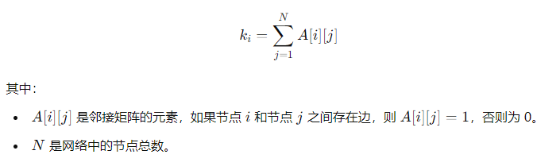

大作业
1 | import csv |
1 | from lxml import etree |
1 | import csv |
1 | import csv |
1 | from lxml import etree |
1 | import csv |
CHAPTER10聚类分析基本概念和方法PPT课件.pptx
1 | import pandas as pd |


| iteration | point_index | petal_length | petal_width | assigned_cluster | distance_0 | distance_1 | distance_2 |
|---|---|---|---|---|---|---|---|
| 迭代参数 | 数据编号 | 花瓣长度 | 花瓣宽度 | 分配到的簇编号 | 点到簇中心0的欧氏距离 | 点到簇中心1的欧氏距离 | 点到簇中心2的欧氏距离 |
| 1 | 0 | 1.40 | 0.20 | 2 | 4.70 | 3.55 | 0.14 |
| 1 | 1 | 1.40 | 0.20 | 2 | 4.70 | 3.55 | 0.14 |
| 1 | 2 | 1.30 | 0.20 | 2 | 4.79 | 3.64 | 0.10 |
| 1 | 3 | 1.50 | 0.20 | 2 | 4.61 | 3.45 | 0.22 |
| 1 | 4 | 1.40 | 0.20 | 2 | 4.70 | 3.55 | 0.14 |
| 1 | 5 | 1.70 | 0.40 | 2 | 4.35 | 3.20 | 0.41 |
| 1 | 6 | 1.40 | 0.30 | 2 | 4.66 | 3.51 | 0.10 |
| 1 | 7 | 1.50 | 0.20 | 2 | 4.61 | 3.45 | 0.22 |
| 1 | 8 | 1.40 | 0.20 | 2 | 4.70 | 3.55 | 0.14 |
| 1 | 9 | 1.50 | 0.10 | 2 | 4.65 | 3.49 | 0.28 |
| 1 | 10 | 1.50 | 0.20 | 2 | 4.61 | 3.45 | 0.22 |
| 1 | 11 | 1.60 | 0.20 | 2 | 4.52 | 3.36 | 0.32 |
| 1 | 12 | 1.40 | 0.10 | 2 | 4.74 | 3.58 | 0.22 |
| 1 | 13 | 1.10 | 0.10 | 2 | 5.02 | 3.86 | 0.28 |
| 1 | 14 | 1.20 | 0.20 | 2 | 4.88 | 3.73 | 0.14 |
| 1 | 15 | 1.50 | 0.40 | 2 | 4.53 | 3.38 | 0.22 |
| 1 | 16 | 1.30 | 0.40 | 2 | 4.72 | 3.57 | 0.10 |
| 1 | 17 | 1.40 | 0.30 | 2 | 4.66 | 3.51 | 0.10 |
| 1 | 18 | 1.70 | 0.30 | 2 | 4.39 | 3.23 | 0.40 |
| 1 | 19 | 1.50 | 0.30 | 2 | 4.57 | 3.42 | 0.20 |
| 1 | 20 | 1.70 | 0.20 | 2 | 4.43 | 3.27 | 0.41 |
| 1 | 21 | 1.50 | 0.40 | 2 | 4.53 | 3.38 | 0.22 |
| 1 | 22 | 1 | 0.20 | 2 | 5.07 | 3.92 | 0.32 |
| 1 | 23 | 1.70 | 0.50 | 2 | 4.31 | 3.16 | 0.45 |
| 1 | 24 | 1.90 | 0.20 | 2 | 4.25 | 3.09 | 0.61 |
| 1 | 25 | 1.60 | 0.20 | 2 | 4.52 | 3.36 | 0.32 |
| 1 | 26 | 1.60 | 0.40 | 2 | 4.44 | 3.29 | 0.32 |
| 1 | 27 | 1.50 | 0.20 | 2 | 4.61 | 3.45 | 0.22 |
| 1 | 28 | 1.40 | 0.20 | 2 | 4.70 | 3.55 | 0.14 |
| 1 | 29 | 1.60 | 0.20 | 2 | 4.52 | 3.36 | 0.32 |
| 1 | 30 | 1.60 | 0.20 | 2 | 4.52 | 3.36 | 0.32 |
| 1 | 31 | 1.50 | 0.40 | 2 | 4.53 | 3.38 | 0.22 |
| 1 | 32 | 1.50 | 0.10 | 2 | 4.65 | 3.49 | 0.28 |
| 1 | 33 | 1.40 | 0.20 | 2 | 4.70 | 3.55 | 0.14 |
| 1 | 34 | 1.50 | 0.20 | 2 | 4.61 | 3.45 | 0.22 |
| 1 | 35 | 1.20 | 0.20 | 2 | 4.88 | 3.73 | 0.14 |
| 1 | 36 | 1.30 | 0.20 | 2 | 4.79 | 3.64 | 0.10 |
| 1 | 37 | 1.40 | 0.10 | 2 | 4.74 | 3.58 | 0.22 |
| 1 | 38 | 1.30 | 0.20 | 2 | 4.79 | 3.64 | 0.10 |
| 1 | 39 | 1.50 | 0.20 | 2 | 4.61 | 3.45 | 0.22 |
| 1 | 40 | 1.30 | 0.30 | 2 | 4.75 | 3.61 | 0 |
| 1 | 41 | 1.30 | 0.30 | 2 | 4.75 | 3.61 | 0 |
| 1 | 42 | 1.30 | 0.20 | 2 | 4.79 | 3.64 | 0.10 |
| 1 | 43 | 1.60 | 0.60 | 2 | 4.37 | 3.23 | 0.42 |
| 1 | 44 | 1.90 | 0.40 | 2 | 4.16 | 3.01 | 0.61 |
| 1 | 45 | 1.40 | 0.30 | 2 | 4.66 | 3.51 | 0.10 |
| 1 | 46 | 1.60 | 0.20 | 2 | 4.52 | 3.36 | 0.32 |
| 1 | 47 | 1.40 | 0.20 | 2 | 4.70 | 3.55 | 0.14 |
| 1 | 48 | 1.50 | 0.20 | 2 | 4.61 | 3.45 | 0.22 |
| 1 | 49 | 1.40 | 0.20 | 2 | 4.70 | 3.55 | 0.14 |
| 1 | 50 | 4.70 | 1.40 | 1 | 1.22 | 0.10 | 3.57 |
| 1 | 51 | 4.50 | 1.50 | 1 | 1.34 | 0.20 | 3.42 |
| 1 | 52 | 4.90 | 1.50 | 1 | 1 | 0.20 | 3.79 |
| 1 | 53 | 4 | 1.30 | 1 | 1.88 | 0.73 | 2.88 |
| 1 | 54 | 4.60 | 1.50 | 1 | 1.25 | 0.10 | 3.51 |
| 1 | 55 | 4.50 | 1.30 | 1 | 1.44 | 0.28 | 3.35 |
| 1 | 56 | 4.70 | 1.60 | 1 | 1.12 | 0.10 | 3.64 |
| 1 | 57 | 3.30 | 1 | 1 | 2.64 | 1.49 | 2.12 |
| 1 | 58 | 4.60 | 1.30 | 1 | 1.36 | 0.22 | 3.45 |
| 1 | 59 | 3.90 | 1.40 | 1 | 1.93 | 0.81 | 2.82 |
| 1 | 60 | 3.50 | 1 | 1 | 2.46 | 1.30 | 2.31 |
| 1 | 61 | 4.20 | 1.50 | 1 | 1.62 | 0.50 | 3.14 |
| 1 | 62 | 4 | 1 | 1 | 2.02 | 0.86 | 2.79 |
| 1 | 63 | 4.70 | 1.40 | 1 | 1.22 | 0.10 | 3.57 |
| 1 | 64 | 3.60 | 1.30 | 1 | 2.25 | 1.12 | 2.51 |
| 1 | 65 | 4.40 | 1.40 | 1 | 1.48 | 0.32 | 3.29 |
| 1 | 66 | 4.50 | 1.50 | 1 | 1.34 | 0.20 | 3.42 |
| 1 | 67 | 4.10 | 1 | 1 | 1.94 | 0.78 | 2.89 |
| 1 | 68 | 4.50 | 1.50 | 1 | 1.34 | 0.20 | 3.42 |
| 1 | 69 | 3.90 | 1.10 | 1 | 2.06 | 0.89 | 2.72 |
| 1 | 70 | 4.80 | 1.80 | 1 | 0.95 | 0.32 | 3.81 |
| 1 | 71 | 4 | 1.30 | 1 | 1.88 | 0.73 | 2.88 |
| 1 | 72 | 4.90 | 1.50 | 1 | 1 | 0.20 | 3.79 |
| 1 | 73 | 4.70 | 1.20 | 1 | 1.35 | 0.30 | 3.52 |
| 1 | 74 | 4.30 | 1.30 | 1 | 1.61 | 0.45 | 3.16 |
| 1 | 75 | 4.40 | 1.40 | 1 | 1.48 | 0.32 | 3.29 |
| 1 | 76 | 4.80 | 1.40 | 1 | 1.14 | 0.14 | 3.67 |
| 1 | 77 | 5 | 1.70 | 1 | 0.81 | 0.36 | 3.96 |
| 1 | 78 | 4.50 | 1.50 | 1 | 1.34 | 0.20 | 3.42 |
| 1 | 79 | 3.50 | 1 | 1 | 2.46 | 1.30 | 2.31 |
| 1 | 80 | 3.80 | 1.10 | 1 | 2.15 | 0.98 | 2.62 |
| 1 | 81 | 3.70 | 1 | 1 | 2.28 | 1.12 | 2.50 |
| 1 | 82 | 3.90 | 1.20 | 1 | 2.01 | 0.85 | 2.75 |
| 1 | 83 | 5.10 | 1.60 | 1 | 0.78 | 0.41 | 4.02 |
| 1 | 84 | 4.50 | 1.50 | 1 | 1.34 | 0.20 | 3.42 |
| 1 | 85 | 4.50 | 1.60 | 1 | 1.30 | 0.22 | 3.45 |
| 1 | 86 | 4.70 | 1.50 | 1 | 1.17 | 0 | 3.61 |
| 1 | 87 | 4.40 | 1.30 | 1 | 1.53 | 0.36 | 3.26 |
| 1 | 88 | 4.10 | 1.30 | 1 | 1.79 | 0.63 | 2.97 |
| 1 | 89 | 4 | 1.30 | 1 | 1.88 | 0.73 | 2.88 |
| 1 | 90 | 4.40 | 1.20 | 1 | 1.58 | 0.42 | 3.23 |
| 1 | 91 | 4.60 | 1.40 | 1 | 1.30 | 0.14 | 3.48 |
| 1 | 92 | 4 | 1.20 | 1 | 1.92 | 0.76 | 2.85 |
| 1 | 93 | 3.30 | 1 | 1 | 2.64 | 1.49 | 2.12 |
| 1 | 94 | 4.20 | 1.30 | 1 | 1.70 | 0.54 | 3.07 |
| 1 | 95 | 4.20 | 1.20 | 1 | 1.75 | 0.58 | 3.04 |
| 1 | 96 | 4.20 | 1.30 | 1 | 1.70 | 0.54 | 3.07 |
| 1 | 97 | 4.30 | 1.30 | 1 | 1.61 | 0.45 | 3.16 |
| 1 | 98 | 3 | 1.10 | 1 | 2.88 | 1.75 | 1.88 |
| 1 | 99 | 4.10 | 1.30 | 1 | 1.79 | 0.63 | 2.97 |
| 1 | 100 | 6 | 2.50 | 0 | 0.50 | 1.64 | 5.19 |
| 1 | 101 | 5.10 | 1.90 | 1 | 0.63 | 0.57 | 4.12 |
| 1 | 102 | 5.90 | 2.10 | 0 | 0.20 | 1.34 | 4.94 |
| 1 | 103 | 5.60 | 1.80 | 0 | 0.32 | 0.95 | 4.55 |
| 1 | 104 | 5.80 | 2.20 | 0 | 0.14 | 1.30 | 4.88 |
| 1 | 105 | 6.60 | 2.10 | 0 | 0.90 | 1.99 | 5.60 |
| 1 | 106 | 4.50 | 1.70 | 1 | 1.26 | 0.28 | 3.49 |
| 1 | 107 | 6.30 | 1.80 | 0 | 0.67 | 1.63 | 5.22 |
| 1 | 108 | 5.80 | 1.80 | 0 | 0.32 | 1.14 | 4.74 |
| 1 | 109 | 6.10 | 2.50 | 0 | 0.57 | 1.72 | 5.28 |
| 1 | 110 | 5.10 | 2 | 0 | 0.61 | 0.64 | 4.16 |
| 1 | 111 | 5.30 | 1.90 | 0 | 0.45 | 0.72 | 4.31 |
| 1 | 112 | 5.50 | 2.10 | 0 | 0.20 | 1 | 4.57 |
| 1 | 113 | 5 | 2 | 1 | 0.71 | 0.58 | 4.07 |
| 1 | 114 | 5.10 | 2.40 | 0 | 0.67 | 0.98 | 4.34 |
| 1 | 115 | 5.30 | 2.30 | 0 | 0.45 | 1 | 4.47 |
| 1 | 116 | 5.50 | 1.80 | 0 | 0.36 | 0.85 | 4.46 |
| 1 | 117 | 6.70 | 2.20 | 0 | 1 | 2.12 | 5.72 |
| 1 | 118 | 6.90 | 2.30 | 0 | 1.22 | 2.34 | 5.95 |
| 1 | 119 | 5 | 1.50 | 1 | 0.92 | 0.30 | 3.89 |
| 1 | 120 | 5.70 | 2.30 | 0 | 0.20 | 1.28 | 4.83 |
| 1 | 121 | 4.90 | 2 | 1 | 0.81 | 0.54 | 3.98 |
| 1 | 122 | 6.70 | 2 | 0 | 1 | 2.06 | 5.66 |
| 1 | 123 | 4.90 | 1.80 | 1 | 0.85 | 0.36 | 3.90 |
| 1 | 124 | 5.70 | 2.10 | 0 | 0 | 1.17 | 4.75 |
| 1 | 125 | 6 | 1.80 | 0 | 0.42 | 1.33 | 4.93 |
| 1 | 126 | 4.80 | 1.80 | 1 | 0.95 | 0.32 | 3.81 |
| 1 | 127 | 4.90 | 1.80 | 1 | 0.85 | 0.36 | 3.90 |
| 1 | 128 | 5.60 | 2.10 | 0 | 0.10 | 1.08 | 4.66 |
| 1 | 129 | 5.80 | 1.60 | 0 | 0.51 | 1.10 | 4.68 |
| 1 | 130 | 6.10 | 1.90 | 0 | 0.45 | 1.46 | 5.06 |
| 1 | 131 | 6.40 | 2 | 0 | 0.71 | 1.77 | 5.38 |
| 1 | 132 | 5.60 | 2.20 | 0 | 0.14 | 1.14 | 4.70 |
| 1 | 133 | 5.10 | 1.50 | 1 | 0.85 | 0.40 | 3.98 |
| 1 | 134 | 5.60 | 1.40 | 0 | 0.71 | 0.91 | 4.44 |
| 1 | 135 | 6.10 | 2.30 | 0 | 0.45 | 1.61 | 5.20 |
| 1 | 136 | 5.60 | 2.40 | 0 | 0.32 | 1.27 | 4.79 |
| 1 | 137 | 5.50 | 1.80 | 0 | 0.36 | 0.85 | 4.46 |
| 1 | 138 | 4.80 | 1.80 | 1 | 0.95 | 0.32 | 3.81 |
| 1 | 139 | 5.40 | 2.10 | 0 | 0.30 | 0.92 | 4.48 |
| 1 | 140 | 5.60 | 2.40 | 0 | 0.32 | 1.27 | 4.79 |
| 1 | 141 | 5.10 | 2.30 | 0 | 0.63 | 0.89 | 4.29 |
| 1 | 142 | 5.10 | 1.90 | 1 | 0.63 | 0.57 | 4.12 |
| 1 | 143 | 5.90 | 2.30 | 0 | 0.28 | 1.44 | 5.02 |
| 1 | 144 | 5.70 | 2.50 | 0 | 0.40 | 1.41 | 4.92 |
| 1 | 145 | 5.20 | 2.30 | 0 | 0.54 | 0.94 | 4.38 |
| 1 | 146 | 5 | 1.90 | 1 | 0.73 | 0.50 | 4.03 |
| 1 | 147 | 5.20 | 2 | 0 | 0.51 | 0.71 | 4.25 |
| 1 | 148 | 5.40 | 2.30 | 0 | 0.36 | 1.06 | 4.56 |
| 1 | 149 | 5.10 | 1.80 | 1 | 0.67 | 0.50 | 4.09 |
| 2 | 0 | 1.40 | 0.20 | 2 | 4.77 | 3.24 | 0.08 |
| 2 | 1 | 1.40 | 0.20 | 2 | 4.77 | 3.24 | 0.08 |
| 2 | 2 | 1.30 | 0.20 | 2 | 4.86 | 3.33 | 0.17 |
| 2 | 3 | 1.50 | 0.20 | 2 | 4.67 | 3.15 | 0.06 |
| 2 | 4 | 1.40 | 0.20 | 2 | 4.77 | 3.24 | 0.08 |
| 2 | 5 | 1.70 | 0.40 | 2 | 4.41 | 2.89 | 0.28 |
| 2 | 6 | 1.40 | 0.30 | 2 | 4.73 | 3.20 | 0.08 |
| 2 | 7 | 1.50 | 0.20 | 2 | 4.67 | 3.15 | 0.06 |
| 2 | 8 | 1.40 | 0.20 | 2 | 4.77 | 3.24 | 0.08 |
| 2 | 9 | 1.50 | 0.10 | 2 | 4.72 | 3.19 | 0.15 |
| 2 | 10 | 1.50 | 0.20 | 2 | 4.67 | 3.15 | 0.06 |
| 2 | 11 | 1.60 | 0.20 | 2 | 4.58 | 3.06 | 0.15 |
| 2 | 12 | 1.40 | 0.10 | 2 | 4.81 | 3.28 | 0.16 |
| 2 | 13 | 1.10 | 0.10 | 2 | 5.08 | 3.56 | 0.39 |
| 2 | 14 | 1.20 | 0.20 | 2 | 4.95 | 3.43 | 0.27 |
| 2 | 15 | 1.50 | 0.40 | 2 | 4.60 | 3.08 | 0.16 |
| 2 | 16 | 1.30 | 0.40 | 2 | 4.78 | 3.26 | 0.22 |
| 2 | 17 | 1.40 | 0.30 | 2 | 4.73 | 3.20 | 0.08 |
| 2 | 18 | 1.70 | 0.30 | 2 | 4.45 | 2.92 | 0.24 |
| 2 | 19 | 1.50 | 0.30 | 2 | 4.63 | 3.11 | 0.07 |
| 2 | 20 | 1.70 | 0.20 | 2 | 4.49 | 2.96 | 0.24 |
| 2 | 21 | 1.50 | 0.40 | 2 | 4.60 | 3.08 | 0.16 |
| 2 | 22 | 1 | 0.20 | 2 | 5.13 | 3.61 | 0.46 |
| 2 | 23 | 1.70 | 0.50 | 2 | 4.37 | 2.85 | 0.35 |
| 2 | 24 | 1.90 | 0.20 | 2 | 4.31 | 2.78 | 0.44 |
| 2 | 25 | 1.60 | 0.20 | 2 | 4.58 | 3.06 | 0.15 |
| 2 | 26 | 1.60 | 0.40 | 2 | 4.50 | 2.98 | 0.21 |
| 2 | 27 | 1.50 | 0.20 | 2 | 4.67 | 3.15 | 0.06 |
| 2 | 28 | 1.40 | 0.20 | 2 | 4.77 | 3.24 | 0.08 |
| 2 | 29 | 1.60 | 0.20 | 2 | 4.58 | 3.06 | 0.15 |
| 2 | 30 | 1.60 | 0.20 | 2 | 4.58 | 3.06 | 0.15 |
| 2 | 31 | 1.50 | 0.40 | 2 | 4.60 | 3.08 | 0.16 |
| 2 | 32 | 1.50 | 0.10 | 2 | 4.72 | 3.19 | 0.15 |
| 2 | 33 | 1.40 | 0.20 | 2 | 4.77 | 3.24 | 0.08 |
| 2 | 34 | 1.50 | 0.20 | 2 | 4.67 | 3.15 | 0.06 |
| 2 | 35 | 1.20 | 0.20 | 2 | 4.95 | 3.43 | 0.27 |
| 2 | 36 | 1.30 | 0.20 | 2 | 4.86 | 3.33 | 0.17 |
| 2 | 37 | 1.40 | 0.10 | 2 | 4.81 | 3.28 | 0.16 |
| 2 | 38 | 1.30 | 0.20 | 2 | 4.86 | 3.33 | 0.17 |
| 2 | 39 | 1.50 | 0.20 | 2 | 4.67 | 3.15 | 0.06 |
| 2 | 40 | 1.30 | 0.30 | 2 | 4.82 | 3.30 | 0.17 |
| 2 | 41 | 1.30 | 0.30 | 2 | 4.82 | 3.30 | 0.17 |
| 2 | 42 | 1.30 | 0.20 | 2 | 4.86 | 3.33 | 0.17 |
| 2 | 43 | 1.60 | 0.60 | 2 | 4.43 | 2.92 | 0.38 |
| 2 | 44 | 1.90 | 0.40 | 2 | 4.23 | 2.70 | 0.46 |
| 2 | 45 | 1.40 | 0.30 | 2 | 4.73 | 3.20 | 0.08 |
| 2 | 46 | 1.60 | 0.20 | 2 | 4.58 | 3.06 | 0.15 |
| 2 | 47 | 1.40 | 0.20 | 2 | 4.77 | 3.24 | 0.08 |
| 2 | 48 | 1.50 | 0.20 | 2 | 4.67 | 3.15 | 0.06 |
| 2 | 49 | 1.40 | 0.20 | 2 | 4.77 | 3.24 | 0.08 |
| 2 | 50 | 4.70 | 1.40 | 1 | 1.28 | 0.30 | 3.44 |
| 2 | 51 | 4.50 | 1.50 | 1 | 1.40 | 0.13 | 3.29 |
| 2 | 52 | 4.90 | 1.50 | 1 | 1.06 | 0.51 | 3.66 |
| 2 | 53 | 4 | 1.30 | 1 | 1.94 | 0.42 | 2.75 |
| 2 | 54 | 4.60 | 1.50 | 1 | 1.32 | 0.21 | 3.38 |
| 2 | 55 | 4.50 | 1.30 | 1 | 1.50 | 0.16 | 3.22 |
| 2 | 56 | 4.70 | 1.60 | 1 | 1.18 | 0.35 | 3.51 |
| 2 | 57 | 3.30 | 1 | 1 | 2.70 | 1.18 | 1.99 |
| 2 | 58 | 4.60 | 1.30 | 1 | 1.42 | 0.24 | 3.31 |
| 2 | 59 | 3.90 | 1.40 | 1 | 2 | 0.50 | 2.70 |
| 2 | 60 | 3.50 | 1 | 1 | 2.52 | 0.99 | 2.17 |
| 2 | 61 | 4.20 | 1.50 | 1 | 1.68 | 0.21 | 3.01 |
| 2 | 62 | 4 | 1 | 1 | 2.08 | 0.58 | 2.65 |
| 2 | 63 | 4.70 | 1.40 | 1 | 1.28 | 0.30 | 3.44 |
| 2 | 64 | 3.60 | 1.30 | 1 | 2.31 | 0.81 | 2.38 |
| 2 | 65 | 4.40 | 1.40 | 1 | 1.54 | 0.02 | 3.16 |
| 2 | 66 | 4.50 | 1.50 | 1 | 1.40 | 0.13 | 3.29 |
| 2 | 67 | 4.10 | 1 | 1 | 2 | 0.52 | 2.74 |
| 2 | 68 | 4.50 | 1.50 | 1 | 1.40 | 0.13 | 3.29 |
| 2 | 69 | 3.90 | 1.10 | 1 | 2.12 | 0.60 | 2.58 |
| 2 | 70 | 4.80 | 1.80 | 1 | 1.01 | 0.55 | 3.68 |
| 2 | 71 | 4 | 1.30 | 1 | 1.94 | 0.42 | 2.75 |
| 2 | 72 | 4.90 | 1.50 | 1 | 1.06 | 0.51 | 3.66 |
| 2 | 73 | 4.70 | 1.20 | 1 | 1.40 | 0.37 | 3.38 |
| 2 | 74 | 4.30 | 1.30 | 1 | 1.67 | 0.16 | 3.03 |
| 2 | 75 | 4.40 | 1.40 | 1 | 1.54 | 0.02 | 3.16 |
| 2 | 76 | 4.80 | 1.40 | 1 | 1.20 | 0.40 | 3.53 |
| 2 | 77 | 5 | 1.70 | 1 | 0.87 | 0.66 | 3.83 |
| 2 | 78 | 4.50 | 1.50 | 1 | 1.40 | 0.13 | 3.29 |
| 2 | 79 | 3.50 | 1 | 1 | 2.52 | 0.99 | 2.17 |
| 2 | 80 | 3.80 | 1.10 | 1 | 2.21 | 0.68 | 2.49 |
| 2 | 81 | 3.70 | 1 | 1 | 2.34 | 0.82 | 2.36 |
| 2 | 82 | 3.90 | 1.20 | 1 | 2.08 | 0.55 | 2.62 |
| 2 | 83 | 5.10 | 1.60 | 1 | 0.84 | 0.72 | 3.88 |
| 2 | 84 | 4.50 | 1.50 | 1 | 1.40 | 0.13 | 3.29 |
| 2 | 85 | 4.50 | 1.60 | 1 | 1.36 | 0.20 | 3.33 |
| 2 | 86 | 4.70 | 1.50 | 1 | 1.23 | 0.31 | 3.47 |
| 2 | 87 | 4.40 | 1.30 | 1 | 1.59 | 0.12 | 3.12 |
| 2 | 88 | 4.10 | 1.30 | 1 | 1.85 | 0.32 | 2.84 |
| 2 | 89 | 4 | 1.30 | 1 | 1.94 | 0.42 | 2.75 |
| 2 | 90 | 4.40 | 1.20 | 1 | 1.64 | 0.22 | 3.09 |
| 2 | 91 | 4.60 | 1.40 | 1 | 1.36 | 0.20 | 3.34 |
| 2 | 92 | 4 | 1.20 | 1 | 1.99 | 0.46 | 2.71 |
| 2 | 93 | 3.30 | 1 | 1 | 2.70 | 1.18 | 1.99 |
| 2 | 94 | 4.20 | 1.30 | 1 | 1.76 | 0.24 | 2.93 |
| 2 | 95 | 4.20 | 1.20 | 1 | 1.81 | 0.30 | 2.90 |
| 2 | 96 | 4.20 | 1.30 | 1 | 1.76 | 0.24 | 2.93 |
| 2 | 97 | 4.30 | 1.30 | 1 | 1.67 | 0.16 | 3.03 |
| 2 | 98 | 3 | 1.10 | 1 | 2.94 | 1.44 | 1.76 |
| 2 | 99 | 4.10 | 1.30 | 1 | 1.85 | 0.32 | 2.84 |
| 2 | 100 | 6 | 2.50 | 0 | 0.46 | 1.93 | 5.07 |
| 2 | 101 | 5.10 | 1.90 | 0 | 0.70 | 0.85 | 4 |
| 2 | 102 | 5.90 | 2.10 | 0 | 0.13 | 1.65 | 4.81 |
| 2 | 103 | 5.60 | 1.80 | 0 | 0.35 | 1.26 | 4.42 |
| 2 | 104 | 5.80 | 2.20 | 0 | 0.10 | 1.60 | 4.76 |
| 2 | 105 | 6.60 | 2.10 | 0 | 0.83 | 2.30 | 5.46 |
| 2 | 106 | 4.50 | 1.70 | 1 | 1.33 | 0.29 | 3.37 |
| 2 | 107 | 6.30 | 1.80 | 0 | 0.61 | 1.94 | 5.08 |
| 2 | 108 | 5.80 | 1.80 | 0 | 0.31 | 1.45 | 4.61 |
| 2 | 109 | 6.10 | 2.50 | 0 | 0.52 | 2.01 | 5.16 |
| 2 | 110 | 5.10 | 2 | 0 | 0.68 | 0.91 | 4.04 |
| 2 | 111 | 5.30 | 1.90 | 0 | 0.51 | 1.02 | 4.18 |
| 2 | 112 | 5.50 | 2.10 | 0 | 0.27 | 1.29 | 4.44 |
| 2 | 113 | 5 | 2 | 0 | 0.77 | 0.83 | 3.95 |
| 2 | 114 | 5.10 | 2.40 | 0 | 0.73 | 1.20 | 4.23 |
| 2 | 115 | 5.30 | 2.30 | 0 | 0.51 | 1.26 | 4.35 |
| 2 | 116 | 5.50 | 1.80 | 0 | 0.41 | 1.16 | 4.33 |
| 2 | 117 | 6.70 | 2.20 | 0 | 0.94 | 2.43 | 5.59 |
| 2 | 118 | 6.90 | 2.30 | 0 | 1.15 | 2.65 | 5.81 |
| 2 | 119 | 5 | 1.50 | 1 | 0.98 | 0.60 | 3.75 |
| 2 | 120 | 5.70 | 2.30 | 0 | 0.21 | 1.57 | 4.71 |
| 2 | 121 | 4.90 | 2 | 1 | 0.87 | 0.76 | 3.86 |
| 2 | 122 | 6.70 | 2 | 0 | 0.94 | 2.37 | 5.52 |
| 2 | 123 | 4.90 | 1.80 | 1 | 0.92 | 0.63 | 3.77 |
| 2 | 124 | 5.70 | 2.10 | 0 | 0.07 | 1.47 | 4.63 |
| 2 | 125 | 6 | 1.80 | 0 | 0.38 | 1.64 | 4.80 |
| 2 | 126 | 4.80 | 1.80 | 1 | 1.01 | 0.55 | 3.68 |
| 2 | 127 | 4.90 | 1.80 | 1 | 0.92 | 0.63 | 3.77 |
| 2 | 128 | 5.60 | 2.10 | 0 | 0.17 | 1.38 | 4.53 |
| 2 | 129 | 5.80 | 1.60 | 0 | 0.51 | 1.41 | 4.54 |
| 2 | 130 | 6.10 | 1.90 | 0 | 0.39 | 1.77 | 4.92 |
| 2 | 131 | 6.40 | 2 | 0 | 0.64 | 2.08 | 5.24 |
| 2 | 132 | 5.60 | 2.20 | 0 | 0.19 | 1.43 | 4.58 |
| 2 | 133 | 5.10 | 1.50 | 1 | 0.90 | 0.70 | 3.85 |
| 2 | 134 | 5.60 | 1.40 | 0 | 0.73 | 1.20 | 4.30 |
| 2 | 135 | 6.10 | 2.30 | 0 | 0.39 | 1.91 | 5.07 |
| 2 | 136 | 5.60 | 2.40 | 0 | 0.34 | 1.55 | 4.67 |
| 2 | 137 | 5.50 | 1.80 | 0 | 0.41 | 1.16 | 4.33 |
| 2 | 138 | 4.80 | 1.80 | 1 | 1.01 | 0.55 | 3.68 |
| 2 | 139 | 5.40 | 2.10 | 0 | 0.37 | 1.21 | 4.35 |
| 2 | 140 | 5.60 | 2.40 | 0 | 0.34 | 1.55 | 4.67 |
| 2 | 141 | 5.10 | 2.30 | 0 | 0.70 | 1.12 | 4.18 |
| 2 | 142 | 5.10 | 1.90 | 0 | 0.70 | 0.85 | 4 |
| 2 | 143 | 5.90 | 2.30 | 0 | 0.24 | 1.74 | 4.89 |
| 2 | 144 | 5.70 | 2.50 | 0 | 0.40 | 1.69 | 4.80 |
| 2 | 145 | 5.20 | 2.30 | 0 | 0.60 | 1.19 | 4.27 |
| 2 | 146 | 5 | 1.90 | 1 | 0.79 | 0.77 | 3.91 |
| 2 | 147 | 5.20 | 2 | 0 | 0.58 | 0.99 | 4.13 |
| 2 | 148 | 5.40 | 2.30 | 0 | 0.42 | 1.33 | 4.44 |
| 2 | 149 | 5.10 | 1.80 | 0 | 0.73 | 0.79 | 3.96 |
| 3 | 0 | 1.40 | 0.20 | 2 | 4.70 | 3.19 | 0.08 |
| 3 | 1 | 1.40 | 0.20 | 2 | 4.70 | 3.19 | 0.08 |
| 3 | 2 | 1.30 | 0.20 | 2 | 4.79 | 3.28 | 0.17 |
| 3 | 3 | 1.50 | 0.20 | 2 | 4.60 | 3.09 | 0.06 |
| 3 | 4 | 1.40 | 0.20 | 2 | 4.70 | 3.19 | 0.08 |
| 3 | 5 | 1.70 | 0.40 | 2 | 4.34 | 2.83 | 0.28 |
| 3 | 6 | 1.40 | 0.30 | 2 | 4.66 | 3.15 | 0.08 |
| 3 | 7 | 1.50 | 0.20 | 2 | 4.60 | 3.09 | 0.06 |
| 3 | 8 | 1.40 | 0.20 | 2 | 4.70 | 3.19 | 0.08 |
| 3 | 9 | 1.50 | 0.10 | 2 | 4.65 | 3.13 | 0.15 |
| 3 | 10 | 1.50 | 0.20 | 2 | 4.60 | 3.09 | 0.06 |
| 3 | 11 | 1.60 | 0.20 | 2 | 4.51 | 3 | 0.15 |
| 3 | 12 | 1.40 | 0.10 | 2 | 4.74 | 3.22 | 0.16 |
| 3 | 13 | 1.10 | 0.10 | 2 | 5.01 | 3.50 | 0.39 |
| 3 | 14 | 1.20 | 0.20 | 2 | 4.88 | 3.37 | 0.27 |
| 3 | 15 | 1.50 | 0.40 | 2 | 4.53 | 3.02 | 0.16 |
| 3 | 16 | 1.30 | 0.40 | 2 | 4.71 | 3.21 | 0.22 |
| 3 | 17 | 1.40 | 0.30 | 2 | 4.66 | 3.15 | 0.08 |
| 3 | 18 | 1.70 | 0.30 | 2 | 4.38 | 2.87 | 0.24 |
| 3 | 19 | 1.50 | 0.30 | 2 | 4.56 | 3.06 | 0.07 |
| 3 | 20 | 1.70 | 0.20 | 2 | 4.42 | 2.91 | 0.24 |
| 3 | 21 | 1.50 | 0.40 | 2 | 4.53 | 3.02 | 0.16 |
| 3 | 22 | 1 | 0.20 | 2 | 5.06 | 3.56 | 0.46 |
| 3 | 23 | 1.70 | 0.50 | 2 | 4.30 | 2.80 | 0.35 |
| 3 | 24 | 1.90 | 0.20 | 2 | 4.24 | 2.73 | 0.44 |
| 3 | 25 | 1.60 | 0.20 | 2 | 4.51 | 3 | 0.15 |
| 3 | 26 | 1.60 | 0.40 | 2 | 4.43 | 2.93 | 0.21 |
| 3 | 27 | 1.50 | 0.20 | 2 | 4.60 | 3.09 | 0.06 |
| 3 | 28 | 1.40 | 0.20 | 2 | 4.70 | 3.19 | 0.08 |
| 3 | 29 | 1.60 | 0.20 | 2 | 4.51 | 3 | 0.15 |
| 3 | 30 | 1.60 | 0.20 | 2 | 4.51 | 3 | 0.15 |
| 3 | 31 | 1.50 | 0.40 | 2 | 4.53 | 3.02 | 0.16 |
| 3 | 32 | 1.50 | 0.10 | 2 | 4.65 | 3.13 | 0.15 |
| 3 | 33 | 1.40 | 0.20 | 2 | 4.70 | 3.19 | 0.08 |
| 3 | 34 | 1.50 | 0.20 | 2 | 4.60 | 3.09 | 0.06 |
| 3 | 35 | 1.20 | 0.20 | 2 | 4.88 | 3.37 | 0.27 |
| 3 | 36 | 1.30 | 0.20 | 2 | 4.79 | 3.28 | 0.17 |
| 3 | 37 | 1.40 | 0.10 | 2 | 4.74 | 3.22 | 0.16 |
| 3 | 38 | 1.30 | 0.20 | 2 | 4.79 | 3.28 | 0.17 |
| 3 | 39 | 1.50 | 0.20 | 2 | 4.60 | 3.09 | 0.06 |
| 3 | 40 | 1.30 | 0.30 | 2 | 4.75 | 3.24 | 0.17 |
| 3 | 41 | 1.30 | 0.30 | 2 | 4.75 | 3.24 | 0.17 |
| 3 | 42 | 1.30 | 0.20 | 2 | 4.79 | 3.28 | 0.17 |
| 3 | 43 | 1.60 | 0.60 | 2 | 4.36 | 2.87 | 0.38 |
| 3 | 44 | 1.90 | 0.40 | 2 | 4.16 | 2.65 | 0.46 |
| 3 | 45 | 1.40 | 0.30 | 2 | 4.66 | 3.15 | 0.08 |
| 3 | 46 | 1.60 | 0.20 | 2 | 4.51 | 3 | 0.15 |
| 3 | 47 | 1.40 | 0.20 | 2 | 4.70 | 3.19 | 0.08 |
| 3 | 48 | 1.50 | 0.20 | 2 | 4.60 | 3.09 | 0.06 |
| 3 | 49 | 1.40 | 0.20 | 2 | 4.70 | 3.19 | 0.08 |
| 3 | 50 | 4.70 | 1.40 | 1 | 1.21 | 0.35 | 3.44 |
| 3 | 51 | 4.50 | 1.50 | 1 | 1.34 | 0.18 | 3.29 |
| 3 | 52 | 4.90 | 1.50 | 1 | 0.99 | 0.56 | 3.66 |
| 3 | 53 | 4 | 1.30 | 1 | 1.87 | 0.37 | 2.75 |
| 3 | 54 | 4.60 | 1.50 | 1 | 1.25 | 0.27 | 3.38 |
| 3 | 55 | 4.50 | 1.30 | 1 | 1.43 | 0.17 | 3.22 |
| 3 | 56 | 4.70 | 1.60 | 1 | 1.11 | 0.40 | 3.51 |
| 3 | 57 | 3.30 | 1 | 1 | 2.63 | 1.12 | 1.99 |
| 3 | 58 | 4.60 | 1.30 | 1 | 1.35 | 0.26 | 3.31 |
| 3 | 59 | 3.90 | 1.40 | 1 | 1.93 | 0.45 | 2.70 |
| 3 | 60 | 3.50 | 1 | 1 | 2.45 | 0.94 | 2.17 |
| 3 | 61 | 4.20 | 1.50 | 1 | 1.61 | 0.19 | 3.01 |
| 3 | 62 | 4 | 1 | 1 | 2.02 | 0.53 | 2.65 |
| 3 | 63 | 4.70 | 1.40 | 1 | 1.21 | 0.35 | 3.44 |
| 3 | 64 | 3.60 | 1.30 | 1 | 2.24 | 0.76 | 2.38 |
| 3 | 65 | 4.40 | 1.40 | 1 | 1.47 | 0.05 | 3.16 |
| 3 | 66 | 4.50 | 1.50 | 1 | 1.34 | 0.18 | 3.29 |
| 3 | 67 | 4.10 | 1 | 1 | 1.93 | 0.47 | 2.74 |
| 3 | 68 | 4.50 | 1.50 | 1 | 1.34 | 0.18 | 3.29 |
| 3 | 69 | 3.90 | 1.10 | 1 | 2.05 | 0.54 | 2.58 |
| 3 | 70 | 4.80 | 1.80 | 1 | 0.94 | 0.60 | 3.68 |
| 3 | 71 | 4 | 1.30 | 1 | 1.87 | 0.37 | 2.75 |
| 3 | 72 | 4.90 | 1.50 | 1 | 0.99 | 0.56 | 3.66 |
| 3 | 73 | 4.70 | 1.20 | 1 | 1.34 | 0.40 | 3.38 |
| 3 | 74 | 4.30 | 1.30 | 1 | 1.61 | 0.11 | 3.03 |
| 3 | 75 | 4.40 | 1.40 | 1 | 1.47 | 0.05 | 3.16 |
| 3 | 76 | 4.80 | 1.40 | 1 | 1.13 | 0.45 | 3.53 |
| 3 | 77 | 5 | 1.70 | 1 | 0.80 | 0.72 | 3.83 |
| 3 | 78 | 4.50 | 1.50 | 1 | 1.34 | 0.18 | 3.29 |
| 3 | 79 | 3.50 | 1 | 1 | 2.45 | 0.94 | 2.17 |
| 3 | 80 | 3.80 | 1.10 | 1 | 2.14 | 0.63 | 2.49 |
| 3 | 81 | 3.70 | 1 | 1 | 2.28 | 0.76 | 2.36 |
| 3 | 82 | 3.90 | 1.20 | 1 | 2.01 | 0.49 | 2.62 |
| 3 | 83 | 5.10 | 1.60 | 0 | 0.77 | 0.77 | 3.88 |
| 3 | 84 | 4.50 | 1.50 | 1 | 1.34 | 0.18 | 3.29 |
| 3 | 85 | 4.50 | 1.60 | 1 | 1.29 | 0.25 | 3.33 |
| 3 | 86 | 4.70 | 1.50 | 1 | 1.16 | 0.36 | 3.47 |
| 3 | 87 | 4.40 | 1.30 | 1 | 1.52 | 0.10 | 3.12 |
| 3 | 88 | 4.10 | 1.30 | 1 | 1.78 | 0.27 | 2.84 |
| 3 | 89 | 4 | 1.30 | 1 | 1.87 | 0.37 | 2.75 |
| 3 | 90 | 4.40 | 1.20 | 1 | 1.57 | 0.20 | 3.09 |
| 3 | 91 | 4.60 | 1.40 | 1 | 1.30 | 0.25 | 3.34 |
| 3 | 92 | 4 | 1.20 | 1 | 1.92 | 0.40 | 2.71 |
| 3 | 93 | 3.30 | 1 | 1 | 2.63 | 1.12 | 1.99 |
| 3 | 94 | 4.20 | 1.30 | 1 | 1.69 | 0.18 | 2.93 |
| 3 | 95 | 4.20 | 1.20 | 1 | 1.74 | 0.25 | 2.90 |
| 3 | 96 | 4.20 | 1.30 | 1 | 1.69 | 0.18 | 2.93 |
| 3 | 97 | 4.30 | 1.30 | 1 | 1.61 | 0.11 | 3.03 |
| 3 | 98 | 3 | 1.10 | 1 | 2.87 | 1.39 | 1.76 |
| 3 | 99 | 4.10 | 1.30 | 1 | 1.78 | 0.27 | 2.84 |
| 3 | 100 | 6 | 2.50 | 0 | 0.51 | 1.98 | 5.07 |
| 3 | 101 | 5.10 | 1.90 | 0 | 0.63 | 0.90 | 4 |
| 3 | 102 | 5.90 | 2.10 | 0 | 0.20 | 1.70 | 4.81 |
| 3 | 103 | 5.60 | 1.80 | 0 | 0.30 | 1.31 | 4.42 |
| 3 | 104 | 5.80 | 2.20 | 0 | 0.15 | 1.66 | 4.76 |
| 3 | 105 | 6.60 | 2.10 | 0 | 0.90 | 2.35 | 5.46 |
| 3 | 106 | 4.50 | 1.70 | 1 | 1.26 | 0.34 | 3.37 |
| 3 | 107 | 6.30 | 1.80 | 0 | 0.66 | 1.99 | 5.08 |
| 3 | 108 | 5.80 | 1.80 | 0 | 0.30 | 1.50 | 4.61 |
| 3 | 109 | 6.10 | 2.50 | 0 | 0.58 | 2.07 | 5.16 |
| 3 | 110 | 5.10 | 2 | 0 | 0.61 | 0.96 | 4.04 |
| 3 | 111 | 5.30 | 1.90 | 0 | 0.44 | 1.07 | 4.18 |
| 3 | 112 | 5.50 | 2.10 | 0 | 0.20 | 1.35 | 4.44 |
| 3 | 113 | 5 | 2 | 0 | 0.71 | 0.89 | 3.95 |
| 3 | 114 | 5.10 | 2.40 | 0 | 0.68 | 1.25 | 4.23 |
| 3 | 115 | 5.30 | 2.30 | 0 | 0.45 | 1.31 | 4.35 |
| 3 | 116 | 5.50 | 1.80 | 0 | 0.35 | 1.22 | 4.33 |
| 3 | 117 | 6.70 | 2.20 | 0 | 1.01 | 2.48 | 5.59 |
| 3 | 118 | 6.90 | 2.30 | 0 | 1.22 | 2.70 | 5.81 |
| 3 | 119 | 5 | 1.50 | 1 | 0.91 | 0.65 | 3.75 |
| 3 | 120 | 5.70 | 2.30 | 0 | 0.21 | 1.62 | 4.71 |
| 3 | 121 | 4.90 | 2 | 0 | 0.80 | 0.82 | 3.86 |
| 3 | 122 | 6.70 | 2 | 0 | 1 | 2.42 | 5.52 |
| 3 | 123 | 4.90 | 1.80 | 1 | 0.85 | 0.68 | 3.77 |
| 3 | 124 | 5.70 | 2.10 | 0 | 0.01 | 1.52 | 4.63 |
| 3 | 125 | 6 | 1.80 | 0 | 0.41 | 1.70 | 4.80 |
| 3 | 126 | 4.80 | 1.80 | 1 | 0.94 | 0.60 | 3.68 |
| 3 | 127 | 4.90 | 1.80 | 1 | 0.85 | 0.68 | 3.77 |
| 3 | 128 | 5.60 | 2.10 | 0 | 0.10 | 1.43 | 4.53 |
| 3 | 129 | 5.80 | 1.60 | 0 | 0.50 | 1.46 | 4.54 |
| 3 | 130 | 6.10 | 1.90 | 0 | 0.44 | 1.82 | 4.92 |
| 3 | 131 | 6.40 | 2 | 0 | 0.71 | 2.13 | 5.24 |
| 3 | 132 | 5.60 | 2.20 | 0 | 0.15 | 1.49 | 4.58 |
| 3 | 133 | 5.10 | 1.50 | 1 | 0.84 | 0.75 | 3.85 |
| 3 | 134 | 5.60 | 1.40 | 0 | 0.69 | 1.25 | 4.30 |
| 3 | 135 | 6.10 | 2.30 | 0 | 0.45 | 1.97 | 5.07 |
| 3 | 136 | 5.60 | 2.40 | 0 | 0.33 | 1.60 | 4.67 |
| 3 | 137 | 5.50 | 1.80 | 0 | 0.35 | 1.22 | 4.33 |
| 3 | 138 | 4.80 | 1.80 | 1 | 0.94 | 0.60 | 3.68 |
| 3 | 139 | 5.40 | 2.10 | 0 | 0.30 | 1.26 | 4.35 |
| 3 | 140 | 5.60 | 2.40 | 0 | 0.33 | 1.60 | 4.67 |
| 3 | 141 | 5.10 | 2.30 | 0 | 0.64 | 1.18 | 4.18 |
| 3 | 142 | 5.10 | 1.90 | 0 | 0.63 | 0.90 | 4 |
| 3 | 143 | 5.90 | 2.30 | 0 | 0.29 | 1.79 | 4.89 |
| 3 | 144 | 5.70 | 2.50 | 0 | 0.41 | 1.74 | 4.80 |
| 3 | 145 | 5.20 | 2.30 | 0 | 0.54 | 1.24 | 4.27 |
| 3 | 146 | 5 | 1.90 | 0 | 0.72 | 0.82 | 3.91 |
| 3 | 147 | 5.20 | 2 | 0 | 0.51 | 1.04 | 4.13 |
| 3 | 148 | 5.40 | 2.30 | 0 | 0.37 | 1.39 | 4.44 |
| 3 | 149 | 5.10 | 1.80 | 0 | 0.66 | 0.85 | 3.96 |
| 4 | 0 | 1.40 | 0.20 | 2 | 4.64 | 3.14 | 0.08 |
| 4 | 1 | 1.40 | 0.20 | 2 | 4.64 | 3.14 | 0.08 |
| 4 | 2 | 1.30 | 0.20 | 2 | 4.74 | 3.24 | 0.17 |
| 4 | 3 | 1.50 | 0.20 | 2 | 4.55 | 3.05 | 0.06 |
| 4 | 4 | 1.40 | 0.20 | 2 | 4.64 | 3.14 | 0.08 |
| 4 | 5 | 1.70 | 0.40 | 2 | 4.29 | 2.79 | 0.28 |
| 4 | 6 | 1.40 | 0.30 | 2 | 4.61 | 3.11 | 0.08 |
| 4 | 7 | 1.50 | 0.20 | 2 | 4.55 | 3.05 | 0.06 |
| 4 | 8 | 1.40 | 0.20 | 2 | 4.64 | 3.14 | 0.08 |
| 4 | 9 | 1.50 | 0.10 | 2 | 4.60 | 3.09 | 0.15 |
| 4 | 10 | 1.50 | 0.20 | 2 | 4.55 | 3.05 | 0.06 |
| 4 | 11 | 1.60 | 0.20 | 2 | 4.46 | 2.96 | 0.15 |
| 4 | 12 | 1.40 | 0.10 | 2 | 4.69 | 3.18 | 0.16 |
| 4 | 13 | 1.10 | 0.10 | 2 | 4.96 | 3.46 | 0.39 |
| 4 | 14 | 1.20 | 0.20 | 2 | 4.83 | 3.33 | 0.27 |
| 4 | 15 | 1.50 | 0.40 | 2 | 4.47 | 2.98 | 0.16 |
| 4 | 16 | 1.30 | 0.40 | 2 | 4.66 | 3.17 | 0.22 |
| 4 | 17 | 1.40 | 0.30 | 2 | 4.61 | 3.11 | 0.08 |
| 4 | 18 | 1.70 | 0.30 | 2 | 4.33 | 2.83 | 0.24 |
| 4 | 19 | 1.50 | 0.30 | 2 | 4.51 | 3.02 | 0.07 |
| 4 | 20 | 1.70 | 0.20 | 2 | 4.37 | 2.87 | 0.24 |
| 4 | 21 | 1.50 | 0.40 | 2 | 4.47 | 2.98 | 0.16 |
| 4 | 22 | 1 | 0.20 | 2 | 5.01 | 3.52 | 0.46 |
| 4 | 23 | 1.70 | 0.50 | 2 | 4.25 | 2.76 | 0.35 |
| 4 | 24 | 1.90 | 0.20 | 2 | 4.19 | 2.69 | 0.44 |
| 4 | 25 | 1.60 | 0.20 | 2 | 4.46 | 2.96 | 0.15 |
| 4 | 26 | 1.60 | 0.40 | 2 | 4.38 | 2.89 | 0.21 |
| 4 | 27 | 1.50 | 0.20 | 2 | 4.55 | 3.05 | 0.06 |
| 4 | 28 | 1.40 | 0.20 | 2 | 4.64 | 3.14 | 0.08 |
| 4 | 29 | 1.60 | 0.20 | 2 | 4.46 | 2.96 | 0.15 |
| 4 | 30 | 1.60 | 0.20 | 2 | 4.46 | 2.96 | 0.15 |
| 4 | 31 | 1.50 | 0.40 | 2 | 4.47 | 2.98 | 0.16 |
| 4 | 32 | 1.50 | 0.10 | 2 | 4.60 | 3.09 | 0.15 |
| 4 | 33 | 1.40 | 0.20 | 2 | 4.64 | 3.14 | 0.08 |
| 4 | 34 | 1.50 | 0.20 | 2 | 4.55 | 3.05 | 0.06 |
| 4 | 35 | 1.20 | 0.20 | 2 | 4.83 | 3.33 | 0.27 |
| 4 | 36 | 1.30 | 0.20 | 2 | 4.74 | 3.24 | 0.17 |
| 4 | 37 | 1.40 | 0.10 | 2 | 4.69 | 3.18 | 0.16 |
| 4 | 38 | 1.30 | 0.20 | 2 | 4.74 | 3.24 | 0.17 |
| 4 | 39 | 1.50 | 0.20 | 2 | 4.55 | 3.05 | 0.06 |
| 4 | 40 | 1.30 | 0.30 | 2 | 4.70 | 3.20 | 0.17 |
| 4 | 41 | 1.30 | 0.30 | 2 | 4.70 | 3.20 | 0.17 |
| 4 | 42 | 1.30 | 0.20 | 2 | 4.74 | 3.24 | 0.17 |
| 4 | 43 | 1.60 | 0.60 | 2 | 4.31 | 2.83 | 0.38 |
| 4 | 44 | 1.90 | 0.40 | 2 | 4.11 | 2.61 | 0.46 |
| 4 | 45 | 1.40 | 0.30 | 2 | 4.61 | 3.11 | 0.08 |
| 4 | 46 | 1.60 | 0.20 | 2 | 4.46 | 2.96 | 0.15 |
| 4 | 47 | 1.40 | 0.20 | 2 | 4.64 | 3.14 | 0.08 |
| 4 | 48 | 1.50 | 0.20 | 2 | 4.55 | 3.05 | 0.06 |
| 4 | 49 | 1.40 | 0.20 | 2 | 4.64 | 3.14 | 0.08 |
| 4 | 50 | 4.70 | 1.40 | 1 | 1.16 | 0.38 | 3.44 |
| 4 | 51 | 4.50 | 1.50 | 1 | 1.28 | 0.22 | 3.29 |
| 4 | 52 | 4.90 | 1.50 | 1 | 0.94 | 0.60 | 3.66 |
| 4 | 53 | 4 | 1.30 | 1 | 1.82 | 0.33 | 2.75 |
| 4 | 54 | 4.60 | 1.50 | 1 | 1.20 | 0.31 | 3.38 |
| 4 | 55 | 4.50 | 1.30 | 1 | 1.38 | 0.19 | 3.22 |
| 4 | 56 | 4.70 | 1.60 | 1 | 1.06 | 0.45 | 3.51 |
| 4 | 57 | 3.30 | 1 | 1 | 2.58 | 1.08 | 1.99 |
| 4 | 58 | 4.60 | 1.30 | 1 | 1.30 | 0.29 | 3.31 |
| 4 | 59 | 3.90 | 1.40 | 1 | 1.88 | 0.42 | 2.70 |
| 4 | 60 | 3.50 | 1 | 1 | 2.40 | 0.90 | 2.17 |
| 4 | 61 | 4.20 | 1.50 | 1 | 1.56 | 0.18 | 3.01 |
| 4 | 62 | 4 | 1 | 1 | 1.97 | 0.49 | 2.65 |
| 4 | 63 | 4.70 | 1.40 | 1 | 1.16 | 0.38 | 3.44 |
| 4 | 64 | 3.60 | 1.30 | 1 | 2.19 | 0.72 | 2.38 |
| 4 | 65 | 4.40 | 1.40 | 1 | 1.42 | 0.09 | 3.16 |
| 4 | 66 | 4.50 | 1.50 | 1 | 1.28 | 0.22 | 3.29 |
| 4 | 67 | 4.10 | 1 | 1 | 1.88 | 0.43 | 2.74 |
| 4 | 68 | 4.50 | 1.50 | 1 | 1.28 | 0.22 | 3.29 |
| 4 | 69 | 3.90 | 1.10 | 1 | 2 | 0.50 | 2.58 |
| 4 | 70 | 4.80 | 1.80 | 1 | 0.89 | 0.65 | 3.68 |
| 4 | 71 | 4 | 1.30 | 1 | 1.82 | 0.33 | 2.75 |
| 4 | 72 | 4.90 | 1.50 | 1 | 0.94 | 0.60 | 3.66 |
| 4 | 73 | 4.70 | 1.20 | 1 | 1.29 | 0.42 | 3.38 |
| 4 | 74 | 4.30 | 1.30 | 1 | 1.56 | 0.07 | 3.03 |
| 4 | 75 | 4.40 | 1.40 | 1 | 1.42 | 0.09 | 3.16 |
| 4 | 76 | 4.80 | 1.40 | 1 | 1.08 | 0.48 | 3.53 |
| 4 | 77 | 5 | 1.70 | 0 | 0.75 | 0.76 | 3.83 |
| 4 | 78 | 4.50 | 1.50 | 1 | 1.28 | 0.22 | 3.29 |
| 4 | 79 | 3.50 | 1 | 1 | 2.40 | 0.90 | 2.17 |
| 4 | 80 | 3.80 | 1.10 | 1 | 2.09 | 0.58 | 2.49 |
| 4 | 81 | 3.70 | 1 | 1 | 2.23 | 0.72 | 2.36 |
| 4 | 82 | 3.90 | 1.20 | 1 | 1.96 | 0.45 | 2.62 |
| 4 | 83 | 5.10 | 1.60 | 0 | 0.72 | 0.81 | 3.88 |
| 4 | 84 | 4.50 | 1.50 | 1 | 1.28 | 0.22 | 3.29 |
| 4 | 85 | 4.50 | 1.60 | 1 | 1.24 | 0.29 | 3.33 |
| 4 | 86 | 4.70 | 1.50 | 1 | 1.11 | 0.40 | 3.47 |
| 4 | 87 | 4.40 | 1.30 | 1 | 1.47 | 0.11 | 3.12 |
| 4 | 88 | 4.10 | 1.30 | 1 | 1.73 | 0.23 | 2.84 |
| 4 | 89 | 4 | 1.30 | 1 | 1.82 | 0.33 | 2.75 |
| 4 | 90 | 4.40 | 1.20 | 1 | 1.52 | 0.19 | 3.09 |
| 4 | 91 | 4.60 | 1.40 | 1 | 1.25 | 0.28 | 3.34 |
| 4 | 92 | 4 | 1.20 | 1 | 1.87 | 0.36 | 2.71 |
| 4 | 93 | 3.30 | 1 | 1 | 2.58 | 1.08 | 1.99 |
| 4 | 94 | 4.20 | 1.30 | 1 | 1.64 | 0.14 | 2.93 |
| 4 | 95 | 4.20 | 1.20 | 1 | 1.69 | 0.21 | 2.90 |
| 4 | 96 | 4.20 | 1.30 | 1 | 1.64 | 0.14 | 2.93 |
| 4 | 97 | 4.30 | 1.30 | 1 | 1.56 | 0.07 | 3.03 |
| 4 | 98 | 3 | 1.10 | 1 | 2.82 | 1.35 | 1.76 |
| 4 | 99 | 4.10 | 1.30 | 1 | 1.73 | 0.23 | 2.84 |
| 4 | 100 | 6 | 2.50 | 0 | 0.55 | 2.03 | 5.07 |
| 4 | 101 | 5.10 | 1.90 | 0 | 0.58 | 0.94 | 4 |
| 4 | 102 | 5.90 | 2.10 | 0 | 0.25 | 1.74 | 4.81 |
| 4 | 103 | 5.60 | 1.80 | 0 | 0.27 | 1.35 | 4.42 |
| 4 | 104 | 5.80 | 2.20 | 0 | 0.20 | 1.70 | 4.76 |
| 4 | 105 | 6.60 | 2.10 | 0 | 0.95 | 2.40 | 5.46 |
| 4 | 106 | 4.50 | 1.70 | 1 | 1.21 | 0.38 | 3.37 |
| 4 | 107 | 6.30 | 1.80 | 0 | 0.70 | 2.03 | 5.08 |
| 4 | 108 | 5.80 | 1.80 | 0 | 0.31 | 1.54 | 4.61 |
| 4 | 109 | 6.10 | 2.50 | 0 | 0.62 | 2.11 | 5.16 |
| 4 | 110 | 5.10 | 2 | 0 | 0.56 | 1 | 4.04 |
| 4 | 111 | 5.30 | 1.90 | 0 | 0.39 | 1.12 | 4.18 |
| 4 | 112 | 5.50 | 2.10 | 0 | 0.16 | 1.39 | 4.44 |
| 4 | 113 | 5 | 2 | 0 | 0.66 | 0.93 | 3.95 |
| 4 | 114 | 5.10 | 2.40 | 0 | 0.64 | 1.29 | 4.23 |
| 4 | 115 | 5.30 | 2.30 | 0 | 0.42 | 1.35 | 4.35 |
| 4 | 116 | 5.50 | 1.80 | 0 | 0.31 | 1.26 | 4.33 |
| 4 | 117 | 6.70 | 2.20 | 0 | 1.06 | 2.52 | 5.59 |
| 4 | 118 | 6.90 | 2.30 | 0 | 1.27 | 2.74 | 5.81 |
| 4 | 119 | 5 | 1.50 | 1 | 0.87 | 0.69 | 3.75 |
| 4 | 120 | 5.70 | 2.30 | 0 | 0.24 | 1.67 | 4.71 |
| 4 | 121 | 4.90 | 2 | 0 | 0.76 | 0.86 | 3.86 |
| 4 | 122 | 6.70 | 2 | 0 | 1.05 | 2.46 | 5.52 |
| 4 | 123 | 4.90 | 1.80 | 1 | 0.80 | 0.72 | 3.77 |
| 4 | 124 | 5.70 | 2.10 | 0 | 0.06 | 1.56 | 4.63 |
| 4 | 125 | 6 | 1.80 | 0 | 0.44 | 1.74 | 4.80 |
| 4 | 126 | 4.80 | 1.80 | 1 | 0.89 | 0.65 | 3.68 |
| 4 | 127 | 4.90 | 1.80 | 1 | 0.80 | 0.72 | 3.77 |
| 4 | 128 | 5.60 | 2.10 | 0 | 0.06 | 1.47 | 4.53 |
| 4 | 129 | 5.80 | 1.60 | 0 | 0.49 | 1.50 | 4.54 |
| 4 | 130 | 6.10 | 1.90 | 0 | 0.48 | 1.86 | 4.92 |
| 4 | 131 | 6.40 | 2 | 0 | 0.75 | 2.17 | 5.24 |
| 4 | 132 | 5.60 | 2.20 | 0 | 0.14 | 1.53 | 4.58 |
| 4 | 133 | 5.10 | 1.50 | 1 | 0.79 | 0.79 | 3.85 |
| 4 | 134 | 5.60 | 1.40 | 0 | 0.67 | 1.28 | 4.30 |
| 4 | 135 | 6.10 | 2.30 | 0 | 0.50 | 2.01 | 5.07 |
| 4 | 136 | 5.60 | 2.40 | 0 | 0.34 | 1.64 | 4.67 |
| 4 | 137 | 5.50 | 1.80 | 0 | 0.31 | 1.26 | 4.33 |
| 4 | 138 | 4.80 | 1.80 | 1 | 0.89 | 0.65 | 3.68 |
| 4 | 139 | 5.40 | 2.10 | 0 | 0.25 | 1.31 | 4.35 |
| 4 | 140 | 5.60 | 2.40 | 0 | 0.34 | 1.64 | 4.67 |
| 4 | 141 | 5.10 | 2.30 | 0 | 0.60 | 1.22 | 4.18 |
| 4 | 142 | 5.10 | 1.90 | 0 | 0.58 | 0.94 | 4 |
| 4 | 143 | 5.90 | 2.30 | 0 | 0.34 | 1.83 | 4.89 |
| 4 | 144 | 5.70 | 2.50 | 0 | 0.43 | 1.79 | 4.80 |
| 4 | 145 | 5.20 | 2.30 | 0 | 0.51 | 1.28 | 4.27 |
| 4 | 146 | 5 | 1.90 | 0 | 0.67 | 0.86 | 3.91 |
| 4 | 147 | 5.20 | 2 | 0 | 0.46 | 1.08 | 4.13 |
| 4 | 148 | 5.40 | 2.30 | 0 | 0.34 | 1.43 | 4.44 |
| 4 | 149 | 5.10 | 1.80 | 0 | 0.61 | 0.89 | 3.96 |
| 5 | 0 | 1.40 | 0.20 | 2 | 4.63 | 3.13 | 0.08 |
| 5 | 1 | 1.40 | 0.20 | 2 | 4.63 | 3.13 | 0.08 |
| 5 | 2 | 1.30 | 0.20 | 2 | 4.72 | 3.22 | 0.17 |
| 5 | 3 | 1.50 | 0.20 | 2 | 4.54 | 3.04 | 0.06 |
| 5 | 4 | 1.40 | 0.20 | 2 | 4.63 | 3.13 | 0.08 |
| 5 | 5 | 1.70 | 0.40 | 2 | 4.27 | 2.78 | 0.28 |
| 5 | 6 | 1.40 | 0.30 | 2 | 4.59 | 3.10 | 0.08 |
| 5 | 7 | 1.50 | 0.20 | 2 | 4.54 | 3.04 | 0.06 |
| 5 | 8 | 1.40 | 0.20 | 2 | 4.63 | 3.13 | 0.08 |
| 5 | 9 | 1.50 | 0.10 | 2 | 4.58 | 3.08 | 0.15 |
| 5 | 10 | 1.50 | 0.20 | 2 | 4.54 | 3.04 | 0.06 |
| 5 | 11 | 1.60 | 0.20 | 2 | 4.45 | 2.95 | 0.15 |
| 5 | 12 | 1.40 | 0.10 | 2 | 4.67 | 3.17 | 0.16 |
| 5 | 13 | 1.10 | 0.10 | 2 | 4.94 | 3.45 | 0.39 |
| 5 | 14 | 1.20 | 0.20 | 2 | 4.81 | 3.32 | 0.27 |
| 5 | 15 | 1.50 | 0.40 | 2 | 4.46 | 2.97 | 0.16 |
| 5 | 16 | 1.30 | 0.40 | 2 | 4.64 | 3.16 | 0.22 |
| 5 | 17 | 1.40 | 0.30 | 2 | 4.59 | 3.10 | 0.08 |
| 5 | 18 | 1.70 | 0.30 | 2 | 4.31 | 2.82 | 0.24 |
| 5 | 19 | 1.50 | 0.30 | 2 | 4.50 | 3 | 0.07 |
| 5 | 20 | 1.70 | 0.20 | 2 | 4.35 | 2.85 | 0.24 |
| 5 | 21 | 1.50 | 0.40 | 2 | 4.46 | 2.97 | 0.16 |
| 5 | 22 | 1 | 0.20 | 2 | 5 | 3.51 | 0.46 |
| 5 | 23 | 1.70 | 0.50 | 2 | 4.24 | 2.75 | 0.35 |
| 5 | 24 | 1.90 | 0.20 | 2 | 4.17 | 2.67 | 0.44 |
| 5 | 25 | 1.60 | 0.20 | 2 | 4.45 | 2.95 | 0.15 |
| 5 | 26 | 1.60 | 0.40 | 2 | 4.37 | 2.87 | 0.21 |
| 5 | 27 | 1.50 | 0.20 | 2 | 4.54 | 3.04 | 0.06 |
| 5 | 28 | 1.40 | 0.20 | 2 | 4.63 | 3.13 | 0.08 |
| 5 | 29 | 1.60 | 0.20 | 2 | 4.45 | 2.95 | 0.15 |
| 5 | 30 | 1.60 | 0.20 | 2 | 4.45 | 2.95 | 0.15 |
| 5 | 31 | 1.50 | 0.40 | 2 | 4.46 | 2.97 | 0.16 |
| 5 | 32 | 1.50 | 0.10 | 2 | 4.58 | 3.08 | 0.15 |
| 5 | 33 | 1.40 | 0.20 | 2 | 4.63 | 3.13 | 0.08 |
| 5 | 34 | 1.50 | 0.20 | 2 | 4.54 | 3.04 | 0.06 |
| 5 | 35 | 1.20 | 0.20 | 2 | 4.81 | 3.32 | 0.27 |
| 5 | 36 | 1.30 | 0.20 | 2 | 4.72 | 3.22 | 0.17 |
| 5 | 37 | 1.40 | 0.10 | 2 | 4.67 | 3.17 | 0.16 |
| 5 | 38 | 1.30 | 0.20 | 2 | 4.72 | 3.22 | 0.17 |
| 5 | 39 | 1.50 | 0.20 | 2 | 4.54 | 3.04 | 0.06 |
| 5 | 40 | 1.30 | 0.30 | 2 | 4.68 | 3.19 | 0.17 |
| 5 | 41 | 1.30 | 0.30 | 2 | 4.68 | 3.19 | 0.17 |
| 5 | 42 | 1.30 | 0.20 | 2 | 4.72 | 3.22 | 0.17 |
| 5 | 43 | 1.60 | 0.60 | 2 | 4.29 | 2.81 | 0.38 |
| 5 | 44 | 1.90 | 0.40 | 2 | 4.09 | 2.59 | 0.46 |
| 5 | 45 | 1.40 | 0.30 | 2 | 4.59 | 3.10 | 0.08 |
| 5 | 46 | 1.60 | 0.20 | 2 | 4.45 | 2.95 | 0.15 |
| 5 | 47 | 1.40 | 0.20 | 2 | 4.63 | 3.13 | 0.08 |
| 5 | 48 | 1.50 | 0.20 | 2 | 4.54 | 3.04 | 0.06 |
| 5 | 49 | 1.40 | 0.20 | 2 | 4.63 | 3.13 | 0.08 |
| 5 | 50 | 4.70 | 1.40 | 1 | 1.15 | 0.39 | 3.44 |
| 5 | 51 | 4.50 | 1.50 | 1 | 1.27 | 0.24 | 3.29 |
| 5 | 52 | 4.90 | 1.50 | 1 | 0.93 | 0.61 | 3.66 |
| 5 | 53 | 4 | 1.30 | 1 | 1.81 | 0.31 | 2.75 |
| 5 | 54 | 4.60 | 1.50 | 1 | 1.18 | 0.32 | 3.38 |
| 5 | 55 | 4.50 | 1.30 | 1 | 1.37 | 0.20 | 3.22 |
| 5 | 56 | 4.70 | 1.60 | 1 | 1.04 | 0.46 | 3.51 |
| 5 | 57 | 3.30 | 1 | 1 | 2.57 | 1.07 | 1.99 |
| 5 | 58 | 4.60 | 1.30 | 1 | 1.29 | 0.30 | 3.31 |
| 5 | 59 | 3.90 | 1.40 | 1 | 1.86 | 0.41 | 2.70 |
| 5 | 60 | 3.50 | 1 | 1 | 2.39 | 0.88 | 2.17 |
| 5 | 61 | 4.20 | 1.50 | 1 | 1.54 | 0.17 | 3.01 |
| 5 | 62 | 4 | 1 | 1 | 1.95 | 0.47 | 2.65 |
| 5 | 63 | 4.70 | 1.40 | 1 | 1.15 | 0.39 | 3.44 |
| 5 | 64 | 3.60 | 1.30 | 1 | 2.17 | 0.71 | 2.38 |
| 5 | 65 | 4.40 | 1.40 | 1 | 1.40 | 0.10 | 3.16 |
| 5 | 66 | 4.50 | 1.50 | 1 | 1.27 | 0.24 | 3.29 |
| 5 | 67 | 4.10 | 1 | 1 | 1.87 | 0.42 | 2.74 |
| 5 | 68 | 4.50 | 1.50 | 1 | 1.27 | 0.24 | 3.29 |
| 5 | 69 | 3.90 | 1.10 | 1 | 1.99 | 0.48 | 2.58 |
| 5 | 70 | 4.80 | 1.80 | 1 | 0.88 | 0.66 | 3.68 |
| 5 | 71 | 4 | 1.30 | 1 | 1.81 | 0.31 | 2.75 |
| 5 | 72 | 4.90 | 1.50 | 1 | 0.93 | 0.61 | 3.66 |
| 5 | 73 | 4.70 | 1.20 | 1 | 1.27 | 0.42 | 3.38 |
| 5 | 74 | 4.30 | 1.30 | 1 | 1.54 | 0.06 | 3.03 |
| 5 | 75 | 4.40 | 1.40 | 1 | 1.40 | 0.10 | 3.16 |
| 5 | 76 | 4.80 | 1.40 | 1 | 1.07 | 0.49 | 3.53 |
| 5 | 77 | 5 | 1.70 | 0 | 0.73 | 0.77 | 3.83 |
| 5 | 78 | 4.50 | 1.50 | 1 | 1.27 | 0.24 | 3.29 |
| 5 | 79 | 3.50 | 1 | 1 | 2.39 | 0.88 | 2.17 |
| 5 | 80 | 3.80 | 1.10 | 1 | 2.07 | 0.57 | 2.49 |
| 5 | 81 | 3.70 | 1 | 1 | 2.21 | 0.71 | 2.36 |
| 5 | 82 | 3.90 | 1.20 | 1 | 1.94 | 0.44 | 2.62 |
| 5 | 83 | 5.10 | 1.60 | 0 | 0.71 | 0.83 | 3.88 |
| 5 | 84 | 4.50 | 1.50 | 1 | 1.27 | 0.24 | 3.29 |
| 5 | 85 | 4.50 | 1.60 | 1 | 1.23 | 0.31 | 3.33 |
| 5 | 86 | 4.70 | 1.50 | 1 | 1.09 | 0.42 | 3.47 |
| 5 | 87 | 4.40 | 1.30 | 1 | 1.45 | 0.11 | 3.12 |
| 5 | 88 | 4.10 | 1.30 | 1 | 1.72 | 0.22 | 2.84 |
| 5 | 89 | 4 | 1.30 | 1 | 1.81 | 0.31 | 2.75 |
| 5 | 90 | 4.40 | 1.20 | 1 | 1.51 | 0.19 | 3.09 |
| 5 | 91 | 4.60 | 1.40 | 1 | 1.23 | 0.30 | 3.34 |
| 5 | 92 | 4 | 1.20 | 1 | 1.85 | 0.35 | 2.71 |
| 5 | 93 | 3.30 | 1 | 1 | 2.57 | 1.07 | 1.99 |
| 5 | 94 | 4.20 | 1.30 | 1 | 1.63 | 0.12 | 2.93 |
| 5 | 95 | 4.20 | 1.20 | 1 | 1.68 | 0.19 | 2.90 |
| 5 | 96 | 4.20 | 1.30 | 1 | 1.63 | 0.12 | 2.93 |
| 5 | 97 | 4.30 | 1.30 | 1 | 1.54 | 0.06 | 3.03 |
| 5 | 98 | 3 | 1.10 | 1 | 2.81 | 1.33 | 1.76 |
| 5 | 99 | 4.10 | 1.30 | 1 | 1.72 | 0.22 | 2.84 |
| 5 | 100 | 6 | 2.50 | 0 | 0.57 | 2.04 | 5.07 |
| 5 | 101 | 5.10 | 1.90 | 0 | 0.56 | 0.96 | 4 |
| 5 | 102 | 5.90 | 2.10 | 0 | 0.27 | 1.76 | 4.81 |
| 5 | 103 | 5.60 | 1.80 | 0 | 0.26 | 1.36 | 4.42 |
| 5 | 104 | 5.80 | 2.20 | 0 | 0.21 | 1.71 | 4.76 |
| 5 | 105 | 6.60 | 2.10 | 0 | 0.96 | 2.41 | 5.46 |
| 5 | 106 | 4.50 | 1.70 | 1 | 1.19 | 0.39 | 3.37 |
| 5 | 107 | 6.30 | 1.80 | 0 | 0.71 | 2.04 | 5.08 |
| 5 | 108 | 5.80 | 1.80 | 0 | 0.31 | 1.56 | 4.61 |
| 5 | 109 | 6.10 | 2.50 | 0 | 0.64 | 2.12 | 5.16 |
| 5 | 110 | 5.10 | 2 | 0 | 0.54 | 1.02 | 4.04 |
| 5 | 111 | 5.30 | 1.90 | 0 | 0.37 | 1.13 | 4.18 |
| 5 | 112 | 5.50 | 2.10 | 0 | 0.14 | 1.40 | 4.44 |
| 5 | 113 | 5 | 2 | 0 | 0.64 | 0.94 | 3.95 |
| 5 | 114 | 5.10 | 2.40 | 0 | 0.64 | 1.31 | 4.23 |
| 5 | 115 | 5.30 | 2.30 | 0 | 0.41 | 1.37 | 4.35 |
| 5 | 116 | 5.50 | 1.80 | 0 | 0.29 | 1.27 | 4.33 |
| 5 | 117 | 6.70 | 2.20 | 0 | 1.07 | 2.54 | 5.59 |
| 5 | 118 | 6.90 | 2.30 | 0 | 1.28 | 2.76 | 5.81 |
| 5 | 119 | 5 | 1.50 | 1 | 0.85 | 0.71 | 3.75 |
| 5 | 120 | 5.70 | 2.30 | 0 | 0.25 | 1.68 | 4.71 |
| 5 | 121 | 4.90 | 2 | 0 | 0.74 | 0.87 | 3.86 |
| 5 | 122 | 6.70 | 2 | 0 | 1.06 | 2.48 | 5.52 |
| 5 | 123 | 4.90 | 1.80 | 1 | 0.78 | 0.74 | 3.77 |
| 5 | 124 | 5.70 | 2.10 | 0 | 0.07 | 1.58 | 4.63 |
| 5 | 125 | 6 | 1.80 | 0 | 0.45 | 1.75 | 4.80 |
| 5 | 126 | 4.80 | 1.80 | 1 | 0.88 | 0.66 | 3.68 |
| 5 | 127 | 4.90 | 1.80 | 1 | 0.78 | 0.74 | 3.77 |
| 5 | 128 | 5.60 | 2.10 | 0 | 0.06 | 1.49 | 4.53 |
| 5 | 129 | 5.80 | 1.60 | 0 | 0.49 | 1.51 | 4.54 |
| 5 | 130 | 6.10 | 1.90 | 0 | 0.49 | 1.87 | 4.92 |
| 5 | 131 | 6.40 | 2 | 0 | 0.76 | 2.19 | 5.24 |
| 5 | 132 | 5.60 | 2.20 | 0 | 0.15 | 1.54 | 4.58 |
| 5 | 133 | 5.10 | 1.50 | 0 | 0.78 | 0.80 | 3.85 |
| 5 | 134 | 5.60 | 1.40 | 0 | 0.66 | 1.29 | 4.30 |
| 5 | 135 | 6.10 | 2.30 | 0 | 0.52 | 2.02 | 5.07 |
| 5 | 136 | 5.60 | 2.40 | 0 | 0.34 | 1.66 | 4.67 |
| 5 | 137 | 5.50 | 1.80 | 0 | 0.29 | 1.27 | 4.33 |
| 5 | 138 | 4.80 | 1.80 | 1 | 0.88 | 0.66 | 3.68 |
| 5 | 139 | 5.40 | 2.10 | 0 | 0.24 | 1.32 | 4.35 |
| 5 | 140 | 5.60 | 2.40 | 0 | 0.34 | 1.66 | 4.67 |
| 5 | 141 | 5.10 | 2.30 | 0 | 0.59 | 1.23 | 4.18 |
| 5 | 142 | 5.10 | 1.90 | 0 | 0.56 | 0.96 | 4 |
| 5 | 143 | 5.90 | 2.30 | 0 | 0.36 | 1.85 | 4.89 |
| 5 | 144 | 5.70 | 2.50 | 0 | 0.44 | 1.80 | 4.80 |
| 5 | 145 | 5.20 | 2.30 | 0 | 0.50 | 1.30 | 4.27 |
| 5 | 146 | 5 | 1.90 | 0 | 0.66 | 0.88 | 3.91 |
| 5 | 147 | 5.20 | 2 | 0 | 0.44 | 1.10 | 4.13 |
| 5 | 148 | 5.40 | 2.30 | 0 | 0.34 | 1.44 | 4.44 |
| 5 | 149 | 5.10 | 1.80 | 0 | 0.60 | 0.91 | 3.96 |
| 6 | 0 | 1.40 | 0.20 | 2 | 4.61 | 3.12 | 0.08 |
| 6 | 1 | 1.40 | 0.20 | 2 | 4.61 | 3.12 | 0.08 |
| 6 | 2 | 1.30 | 0.20 | 2 | 4.70 | 3.21 | 0.17 |
| 6 | 3 | 1.50 | 0.20 | 2 | 4.52 | 3.02 | 0.06 |
| 6 | 4 | 1.40 | 0.20 | 2 | 4.61 | 3.12 | 0.08 |
| 6 | 5 | 1.70 | 0.40 | 2 | 4.26 | 2.76 | 0.28 |
| 6 | 6 | 1.40 | 0.30 | 2 | 4.57 | 3.08 | 0.08 |
| 6 | 7 | 1.50 | 0.20 | 2 | 4.52 | 3.02 | 0.06 |
| 6 | 8 | 1.40 | 0.20 | 2 | 4.61 | 3.12 | 0.08 |
| 6 | 9 | 1.50 | 0.10 | 2 | 4.56 | 3.06 | 0.15 |
| 6 | 10 | 1.50 | 0.20 | 2 | 4.52 | 3.02 | 0.06 |
| 6 | 11 | 1.60 | 0.20 | 2 | 4.43 | 2.93 | 0.15 |
| 6 | 12 | 1.40 | 0.10 | 2 | 4.65 | 3.15 | 0.16 |
| 6 | 13 | 1.10 | 0.10 | 2 | 4.93 | 3.43 | 0.39 |
| 6 | 14 | 1.20 | 0.20 | 2 | 4.80 | 3.30 | 0.27 |
| 6 | 15 | 1.50 | 0.40 | 2 | 4.44 | 2.95 | 0.16 |
| 6 | 16 | 1.30 | 0.40 | 2 | 4.63 | 3.14 | 0.22 |
| 6 | 17 | 1.40 | 0.30 | 2 | 4.57 | 3.08 | 0.08 |
| 6 | 18 | 1.70 | 0.30 | 2 | 4.30 | 2.80 | 0.24 |
| 6 | 19 | 1.50 | 0.30 | 2 | 4.48 | 2.99 | 0.07 |
| 6 | 20 | 1.70 | 0.20 | 2 | 4.34 | 2.84 | 0.24 |
| 6 | 21 | 1.50 | 0.40 | 2 | 4.44 | 2.95 | 0.16 |
| 6 | 22 | 1 | 0.20 | 2 | 4.98 | 3.49 | 0.46 |
| 6 | 23 | 1.70 | 0.50 | 2 | 4.22 | 2.73 | 0.35 |
| 6 | 24 | 1.90 | 0.20 | 2 | 4.16 | 2.66 | 0.44 |
| 6 | 25 | 1.60 | 0.20 | 2 | 4.43 | 2.93 | 0.15 |
| 6 | 26 | 1.60 | 0.40 | 2 | 4.35 | 2.86 | 0.21 |
| 6 | 27 | 1.50 | 0.20 | 2 | 4.52 | 3.02 | 0.06 |
| 6 | 28 | 1.40 | 0.20 | 2 | 4.61 | 3.12 | 0.08 |
| 6 | 29 | 1.60 | 0.20 | 2 | 4.43 | 2.93 | 0.15 |
| 6 | 30 | 1.60 | 0.20 | 2 | 4.43 | 2.93 | 0.15 |
| 6 | 31 | 1.50 | 0.40 | 2 | 4.44 | 2.95 | 0.16 |
| 6 | 32 | 1.50 | 0.10 | 2 | 4.56 | 3.06 | 0.15 |
| 6 | 33 | 1.40 | 0.20 | 2 | 4.61 | 3.12 | 0.08 |
| 6 | 34 | 1.50 | 0.20 | 2 | 4.52 | 3.02 | 0.06 |
| 6 | 35 | 1.20 | 0.20 | 2 | 4.80 | 3.30 | 0.27 |
| 6 | 36 | 1.30 | 0.20 | 2 | 4.70 | 3.21 | 0.17 |
| 6 | 37 | 1.40 | 0.10 | 2 | 4.65 | 3.15 | 0.16 |
| 6 | 38 | 1.30 | 0.20 | 2 | 4.70 | 3.21 | 0.17 |
| 6 | 39 | 1.50 | 0.20 | 2 | 4.52 | 3.02 | 0.06 |
| 6 | 40 | 1.30 | 0.30 | 2 | 4.67 | 3.17 | 0.17 |
| 6 | 41 | 1.30 | 0.30 | 2 | 4.67 | 3.17 | 0.17 |
| 6 | 42 | 1.30 | 0.20 | 2 | 4.70 | 3.21 | 0.17 |
| 6 | 43 | 1.60 | 0.60 | 2 | 4.28 | 2.80 | 0.38 |
| 6 | 44 | 1.90 | 0.40 | 2 | 4.07 | 2.58 | 0.46 |
| 6 | 45 | 1.40 | 0.30 | 2 | 4.57 | 3.08 | 0.08 |
| 6 | 46 | 1.60 | 0.20 | 2 | 4.43 | 2.93 | 0.15 |
| 6 | 47 | 1.40 | 0.20 | 2 | 4.61 | 3.12 | 0.08 |
| 6 | 48 | 1.50 | 0.20 | 2 | 4.52 | 3.02 | 0.06 |
| 6 | 49 | 1.40 | 0.20 | 2 | 4.61 | 3.12 | 0.08 |
| 6 | 50 | 4.70 | 1.40 | 1 | 1.13 | 0.41 | 3.44 |
| 6 | 51 | 4.50 | 1.50 | 1 | 1.25 | 0.25 | 3.29 |
| 6 | 52 | 4.90 | 1.50 | 1 | 0.91 | 0.62 | 3.66 |
| 6 | 53 | 4 | 1.30 | 1 | 1.79 | 0.30 | 2.75 |
| 6 | 54 | 4.60 | 1.50 | 1 | 1.16 | 0.34 | 3.38 |
| 6 | 55 | 4.50 | 1.30 | 1 | 1.35 | 0.22 | 3.22 |
| 6 | 56 | 4.70 | 1.60 | 1 | 1.03 | 0.47 | 3.51 |
| 6 | 57 | 3.30 | 1 | 1 | 2.55 | 1.06 | 1.99 |
| 6 | 58 | 4.60 | 1.30 | 1 | 1.27 | 0.31 | 3.31 |
| 6 | 59 | 3.90 | 1.40 | 1 | 1.84 | 0.39 | 2.70 |
| 6 | 60 | 3.50 | 1 | 1 | 2.37 | 0.87 | 2.17 |
| 6 | 61 | 4.20 | 1.50 | 1 | 1.53 | 0.17 | 3.01 |
| 6 | 62 | 4 | 1 | 1 | 1.93 | 0.46 | 2.65 |
| 6 | 63 | 4.70 | 1.40 | 1 | 1.13 | 0.41 | 3.44 |
| 6 | 64 | 3.60 | 1.30 | 1 | 2.16 | 0.70 | 2.38 |
| 6 | 65 | 4.40 | 1.40 | 1 | 1.39 | 0.11 | 3.16 |
| 6 | 66 | 4.50 | 1.50 | 1 | 1.25 | 0.25 | 3.29 |
| 6 | 67 | 4.10 | 1 | 1 | 1.85 | 0.41 | 2.74 |
| 6 | 68 | 4.50 | 1.50 | 1 | 1.25 | 0.25 | 3.29 |
| 6 | 69 | 3.90 | 1.10 | 1 | 1.97 | 0.47 | 2.58 |
| 6 | 70 | 4.80 | 1.80 | 1 | 0.86 | 0.67 | 3.68 |
| 6 | 71 | 4 | 1.30 | 1 | 1.79 | 0.30 | 2.75 |
| 6 | 72 | 4.90 | 1.50 | 1 | 0.91 | 0.62 | 3.66 |
| 6 | 73 | 4.70 | 1.20 | 1 | 1.26 | 0.44 | 3.38 |
| 6 | 74 | 4.30 | 1.30 | 1 | 1.52 | 0.06 | 3.03 |
| 6 | 75 | 4.40 | 1.40 | 1 | 1.39 | 0.11 | 3.16 |
| 6 | 76 | 4.80 | 1.40 | 1 | 1.05 | 0.51 | 3.53 |
| 6 | 77 | 5 | 1.70 | 0 | 0.72 | 0.79 | 3.83 |
| 6 | 78 | 4.50 | 1.50 | 1 | 1.25 | 0.25 | 3.29 |
| 6 | 79 | 3.50 | 1 | 1 | 2.37 | 0.87 | 2.17 |
| 6 | 80 | 3.80 | 1.10 | 1 | 2.06 | 0.56 | 2.49 |
| 6 | 81 | 3.70 | 1 | 1 | 2.19 | 0.69 | 2.36 |
| 6 | 82 | 3.90 | 1.20 | 1 | 1.92 | 0.42 | 2.62 |
| 6 | 83 | 5.10 | 1.60 | 0 | 0.69 | 0.84 | 3.88 |
| 6 | 84 | 4.50 | 1.50 | 1 | 1.25 | 0.25 | 3.29 |
| 6 | 85 | 4.50 | 1.60 | 1 | 1.21 | 0.32 | 3.33 |
| 6 | 86 | 4.70 | 1.50 | 1 | 1.08 | 0.43 | 3.47 |
| 6 | 87 | 4.40 | 1.30 | 1 | 1.44 | 0.12 | 3.12 |
| 6 | 88 | 4.10 | 1.30 | 1 | 1.70 | 0.20 | 2.84 |
| 6 | 89 | 4 | 1.30 | 1 | 1.79 | 0.30 | 2.75 |
| 6 | 90 | 4.40 | 1.20 | 1 | 1.49 | 0.19 | 3.09 |
| 6 | 91 | 4.60 | 1.40 | 1 | 1.21 | 0.31 | 3.34 |
| 6 | 92 | 4 | 1.20 | 1 | 1.83 | 0.33 | 2.71 |
| 6 | 93 | 3.30 | 1 | 1 | 2.55 | 1.06 | 1.99 |
| 6 | 94 | 4.20 | 1.30 | 1 | 1.61 | 0.11 | 2.93 |
| 6 | 95 | 4.20 | 1.20 | 1 | 1.66 | 0.18 | 2.90 |
| 6 | 96 | 4.20 | 1.30 | 1 | 1.61 | 0.11 | 2.93 |
| 6 | 97 | 4.30 | 1.30 | 1 | 1.52 | 0.06 | 3.03 |
| 6 | 98 | 3 | 1.10 | 1 | 2.79 | 1.32 | 1.76 |
| 6 | 99 | 4.10 | 1.30 | 1 | 1.70 | 0.20 | 2.84 |
| 6 | 100 | 6 | 2.50 | 0 | 0.59 | 2.05 | 5.07 |
| 6 | 101 | 5.10 | 1.90 | 0 | 0.55 | 0.97 | 4 |
| 6 | 102 | 5.90 | 2.10 | 0 | 0.28 | 1.77 | 4.81 |
| 6 | 103 | 5.60 | 1.80 | 0 | 0.25 | 1.38 | 4.42 |
| 6 | 104 | 5.80 | 2.20 | 0 | 0.23 | 1.73 | 4.76 |
| 6 | 105 | 6.60 | 2.10 | 0 | 0.98 | 2.42 | 5.46 |
| 6 | 106 | 4.50 | 1.70 | 1 | 1.18 | 0.40 | 3.37 |
| 6 | 107 | 6.30 | 1.80 | 0 | 0.72 | 2.06 | 5.08 |
| 6 | 108 | 5.80 | 1.80 | 0 | 0.30 | 1.57 | 4.61 |
| 6 | 109 | 6.10 | 2.50 | 0 | 0.66 | 2.14 | 5.16 |
| 6 | 110 | 5.10 | 2 | 0 | 0.53 | 1.03 | 4.04 |
| 6 | 111 | 5.30 | 1.90 | 0 | 0.36 | 1.14 | 4.18 |
| 6 | 112 | 5.50 | 2.10 | 0 | 0.14 | 1.42 | 4.44 |
| 6 | 113 | 5 | 2 | 0 | 0.63 | 0.95 | 3.95 |
| 6 | 114 | 5.10 | 2.40 | 0 | 0.63 | 1.32 | 4.23 |
| 6 | 115 | 5.30 | 2.30 | 0 | 0.41 | 1.38 | 4.35 |
| 6 | 116 | 5.50 | 1.80 | 0 | 0.28 | 1.29 | 4.33 |
| 6 | 117 | 6.70 | 2.20 | 0 | 1.08 | 2.55 | 5.59 |
| 6 | 118 | 6.90 | 2.30 | 0 | 1.30 | 2.77 | 5.81 |
| 6 | 119 | 5 | 1.50 | 1 | 0.83 | 0.72 | 3.75 |
| 6 | 120 | 5.70 | 2.30 | 0 | 0.26 | 1.69 | 4.71 |
| 6 | 121 | 4.90 | 2 | 0 | 0.73 | 0.88 | 3.86 |
| 6 | 122 | 6.70 | 2 | 0 | 1.07 | 2.49 | 5.52 |
| 6 | 123 | 4.90 | 1.80 | 1 | 0.77 | 0.75 | 3.77 |
| 6 | 124 | 5.70 | 2.10 | 0 | 0.09 | 1.59 | 4.63 |
| 6 | 125 | 6 | 1.80 | 0 | 0.45 | 1.76 | 4.80 |
| 6 | 126 | 4.80 | 1.80 | 1 | 0.86 | 0.67 | 3.68 |
| 6 | 127 | 4.90 | 1.80 | 1 | 0.77 | 0.75 | 3.77 |
| 6 | 128 | 5.60 | 2.10 | 0 | 0.06 | 1.50 | 4.53 |
| 6 | 129 | 5.80 | 1.60 | 0 | 0.48 | 1.53 | 4.54 |
| 6 | 130 | 6.10 | 1.90 | 0 | 0.50 | 1.89 | 4.92 |
| 6 | 131 | 6.40 | 2 | 0 | 0.78 | 2.20 | 5.24 |
| 6 | 132 | 5.60 | 2.20 | 0 | 0.15 | 1.55 | 4.58 |
| 6 | 133 | 5.10 | 1.50 | 0 | 0.76 | 0.82 | 3.85 |
| 6 | 134 | 5.60 | 1.40 | 0 | 0.65 | 1.31 | 4.30 |
| 6 | 135 | 6.10 | 2.30 | 0 | 0.54 | 2.04 | 5.07 |
| 6 | 136 | 5.60 | 2.40 | 0 | 0.35 | 1.67 | 4.67 |
| 6 | 137 | 5.50 | 1.80 | 0 | 0.28 | 1.29 | 4.33 |
| 6 | 138 | 4.80 | 1.80 | 1 | 0.86 | 0.67 | 3.68 |
| 6 | 139 | 5.40 | 2.10 | 0 | 0.23 | 1.33 | 4.35 |
| 6 | 140 | 5.60 | 2.40 | 0 | 0.35 | 1.67 | 4.67 |
| 6 | 141 | 5.10 | 2.30 | 0 | 0.58 | 1.24 | 4.18 |
| 6 | 142 | 5.10 | 1.90 | 0 | 0.55 | 0.97 | 4 |
| 6 | 143 | 5.90 | 2.30 | 0 | 0.37 | 1.86 | 4.89 |
| 6 | 144 | 5.70 | 2.50 | 0 | 0.46 | 1.81 | 4.80 |
| 6 | 145 | 5.20 | 2.30 | 0 | 0.50 | 1.31 | 4.27 |
| 6 | 146 | 5 | 1.90 | 0 | 0.64 | 0.89 | 3.91 |
| 6 | 147 | 5.20 | 2 | 0 | 0.43 | 1.11 | 4.13 |
| 6 | 148 | 5.40 | 2.30 | 0 | 0.34 | 1.45 | 4.44 |
| 6 | 149 | 5.10 | 1.80 | 0 | 0.58 | 0.92 | 3.96 |
1 | import numpy as np |

1 | import numpy as np |
在cut高度 2.0 时，得到 6 个簇
在cut高度 3.5 时，得到 5 个簇
在cut高度 5.0 时，得到 3 个簇
1 | import numpy as np |

1 | import numpy as np |
1 | import matplotlib |
轮廓系数: 0.500
ARI指数: 0.575
发现簇数量: 4
噪声点数量: 0
1 | from sklearn.cluster import DBSCAN |

轮廓系数: 0.767
ARI指数: 0.568
发现簇数量: 2
噪声点数量: 0
1 | import matplotlib |
轮廓系数: 0.630
ARI指数: 0.914
发现簇数量: 4
噪声点数量: 18
1 | from sklearn.cluster import OPTICS |
【性能评估】
轮廓系数（越接近 1，聚类效果越好（点紧密集中在各自簇内，簇之间分得开））: 0.576
ARI指数（聚类结果与真实标签完全匹配，1 表示完全一致（）: 0.643
检测到簇数量: 2个
噪声点比例: 27.3%


【性能评估】
轮廓系数（越接近 1，聚类效果越好）: 0.260
ARI指数（聚类结果与真实标签匹配度）: 0.538
检测到簇数量: 3 个
噪声点比例: 46.0%

1 | from sklearn.cluster import OPTICS |
【性能评估】
轮廓系数: 0.460
ARI指数: 0.731
检测到簇数量: 4 个
噪声点比例: 20.0%
1 | from sklearn.cluster import OPTICS |
【优化后性能评估】
轮廓系数: 0.841
ARI指数: 1.000
检测到簇数量: 4 个
噪声点比例: 0.0%
1 |
|
1 |
|
1 |
|
以下列出了添加元素、查询、索引、赋值、比较等常用操作方法：
v.empty()：如果 v 为空则返回 true，否则返回 false。v.size()：返回 v 中元素的个数。v.push_back(val)：向 vector 的尾端添加值为 val 的元素。注意：vector 不支持 push_front 操作。v.pop_back()：删除尾元素，返回 void。vector 同样不支持 pop_front 操作。若想在同时弹出元素的值，就必须在执行弹出之前保存它（可以使用 v.back()）。v[n]：返回 v 中第 n 个位置上元素的引用，不能用下标操作添加元素。v.back()：返回 v 中最后一个元素的引用。v.front()：返回 v 中第一个元素的引用。v1 = v2：用 v2 中的元素替换 v1 中的元素。v1 = {a, b, c...}：用元素 {a, b, c…} 替换 v1 中的元素。v1 == v2：当且仅当拥有相同数量且相同位置上值相同的元素时，v1 与 v2 相等。v1 != v2：当 v1 与 v2 不相等时返回 true。<, <=, >, >=：以字典序进行比较。迭代器类似于指针，提供了对象的间接访问，但获取迭代器并不是使用取地址符。如果将指针理解为元素的“地址”，那么迭代器可以理解为元素的“位置”。可以使用迭代器访问某个元素，迭代器也能从一个元素移动到另一个元素。
一个迭代器的范围由一对迭代器表示，分别为 begin 和 end。其中 begin 成员返回指向第一个元素的迭代器；end 成员返回容器最后一个元素的下一个位置（one past the end），也就是指向一个根本不存在的尾后位置，这样的迭代器没什么实际含义，仅是个标记而已，表示已经处理完了容器中的所有元素。所以 begin 和 end 表示的是一个左闭右开的区间 [ begin , end)
迭代器可以用来实现容器的遍历、插入等操作，可以细品下面的例子：
1 |
|
运行结果：
1 | 0 1 2 3 4 5 6 7 8 |
插入操作的函数：
v.insert(p, n, val)：在迭代器 p 之前插入 n 个值为 val 的元素，返回新添加的第一个元素的迭代器。1 |
|
输出结果：
1 | 6 |
删除操作的函数：
v.erase(p)：删除迭代器 p 所指的元素，返回指向被删除元素后一个位置的迭代器。v.erase(p, q)：删除迭代器 p 和 q 之间的元素（包含 p，但不包含 q），返回指向被删除区域后一个位置的迭代器。1 |
|
输出结果：
1 | 1 3 4 5 |
sort(v.begin(), v.end())：对 vector 中的元素进行升序排序。1 |
|
输出结果：
1 | 1 2 3 4 5 |
reverse(v.begin(), v.end())：将 vector 中的元素顺序反转。1 |
|
输出结果：
1 | 5 4 3 2 1 |
*max_element(v.begin(), v.end())：返回 vector 中最大的元素。
1 |
|
输出结果：
1 | 最大值: 5 |
*min_element(v.begin(), v.end())：返回 vector 中最小的元素。1 |
|
输出结果：
1 | 最小值: 1 |
v.resize(n)：调整 vector 的大小为 n，若当前大小小于 n，会追加默认值，若当前大小大于 n，则多余的元素会被删除。v.resize(n, val)：调整大小为 n，并使用 val 填充新增加的元素。1 |
|
输出结果：
1 | 1 2 3 0 0 |
vector 在扩容时，并非每次增加一个元素就重新分配内存，而是会按一定的倍数增长。当元素个数达到当前容量时，vector 会重新分配内存并将旧数据拷贝到新的内存块中。
v.capacity()：返回当前 vector 的容量，即在不重新分配内存的情况下，vector 能存储多少元素。v.shrink_to_fit()：请求收缩容量到与当前大小相符。1 |
|
输出结果：
1 | 初始容量: 3 |
vector？vector 是更好的选择，因为它能动态调整大小，而内置数组的大小在编译时就已经确定。vector 会自动管理内存的分配与释放，使用起来更方便，避免手动管理内存的复杂性。vector 提供了许多内建函数（如 push_back、resize、insert 等），使得数据处理更加灵活和高效。vector，尤其是在没有频繁改变数组大小时。它们不会发生额外的内存分配和拷贝，因此在一些对性能要求高的场景下，内置数组可能会更合适。vector 是 C++ 中非常强大的数据结构，它不仅提供了动态调整大小的能力，还能在一定程度上避免内存管理的复杂性。在实际开发中，我们应根据需要灵活选择使用 vector 或者内置数组。
转载请注明出处。
1 | 这个版本包括了整个文章的内容，已经转为 Markdown 格式。你可以直接使用这个格式在你的编辑器或其他平台上发布。如果有其他需求或修改，请告诉我！ |
这议论文描述了一个带有谣言传播和辟谣信息传播的 CASEIR 模型，其动力学方程式 (1) 表达了不同人群状态之间的转移关系。该模型是为了模拟谣言与辟谣信息在人群中的传播机制，并分析各类个体在谣言和辟谣信息传播过程中的动态变化。以下是公式中各个变量的含义和方程的理解：
方程 (1) 中的每个微分方程分别描述了不同状态下的个体数量随时间的变化。每个方程右侧的项代表了各种转移的概率、速率以及个体的动态转移过程。
易感者的变化 $ \frac{dS(t)}{dt} $
谣言接触者的变化 $ ( \frac{dE_1(t)}{dt} ) $
辟谣信息接触者的变化 $ ( \frac{dE_2(t)}{dt} ) $
谣言传播者的变化 $ ( \frac{dI_1(t)}{dt} ) $
辟谣信息传播者的变化$ ( \frac{dI_2(t)}{dt} ) $
谣言免疫者和辟谣信息免疫者的变化$ ( \frac{dR_1(t)}{dt} ) $和$ ( \frac{dR_2(t)}{dt} )$
($ J(E_0) $ ) 是该系统在平衡状态（即 ($ E_0 $ ) 时刻）下的雅可比矩阵。这个矩阵用于分析平衡点的稳定性，通过特征方程可以得到基本再生数 ($ R_0 $)，即系统中谣言和辟谣传播的基本传播能力。
( $ R_0 $) 是影响系统动力学稳定性的重要参数。如果 ( $ R_0 > 1 $ )，意味着谣言或辟谣信息在系统中会持续传播，否则，谣言和辟谣会逐渐消失。
矩阵 ( $ J(E_0) $ ) 是系统在平衡点 ( $ E_0 $ ) 处的 雅可比矩阵，也称为 Jacobian 矩阵。它用于分析系统在平衡状态下的稳定性，即考察该系统在谣言和辟谣传播过程中的稳定性。下面是它的来源和具体作用的解释。
对于一个非线性动力学系统，假设其状态变量$ （如 ( S )、( E_1 )、( E_2 )、( I_1 )、( I_2 )、( R_1 )、( R_2 )）$的动态演变可以用一个向量形式的微分方程来表示：
$ \frac{d\mathbf{X}}{dt} = \mathbf{F}(\mathbf{X}) $,
其中，$ ( \mathbf{X} = [S, E_1, E_2, I_1, I_2, R_1, R_2]^T ) $ 是状态变量的向量，$ ( \mathbf{F}(\mathbf{X}) ) $是状态变量变化的函数。
Jacobian 矩阵 ( J ) 是对这个向量函数 $ ( \mathbf{F}(\mathbf{X}) ) $ 进行一阶泰勒展开得到的偏导数矩阵，即：$ J = \frac{\partial \mathbf{F}}{\partial \mathbf{X}} $
该矩阵的每个元素$ ( J_{ij} ) $ 表示第 ( i ) 个方程对第 ( j ) 个变量的偏导数，描述了系统在某个状态点（例如 ($ E_0 $) 平衡点）下，每个状态变量的微小变化对其他变量变化的影响。
在这里，矩阵 ( J$ (E_0) $) 是对系统在平衡点 ( $ E_0 $) 处的 Jacobian 矩阵。即将所有变量的变化率方程（即方程组 (1)）中的每一项对每个变量分别求偏导，得到如下的矩阵形式：
$ J(E_0) = \begin{pmatrix} \frac{\partial f_1}{\partial S} & \frac{\partial f_1}{\partial E_1} & \dots & \frac{\partial f_1}{\partial R_2} \\ \frac{\partial f_2}{\partial S} & \frac{\partial f_2}{\partial E_1} & \dots & \frac{\partial f_2}{\partial R_2} \\ \vdots & \vdots & \ddots & \vdots \\ \frac{\partial f_7}{\partial S} & \frac{\partial f_7}{\partial E_1} & \dots & \frac{\partial f_7}{\partial R_2} \end{pmatrix} $
其中 ($ f_i $) 表示第 ( i ) 个微分方程的右侧表达式。
在 ( $ E_0 $ ) 点，即平衡状态下的 Jacobian 矩阵 ( $ J(E_0) $)，描述了系统在该平衡状态附近的局部线性行为。通常，平衡点 ( $ E_0 $) 是一个无传播状态，例如 ( S ) 等于总人口，所有其他状态变量都为零，表示没有谣言和辟谣传播的状态。
在这个谣言传播模型中，Jacobian 矩阵 ( $ J(E_0) $ ) 的特征值为$ \lambda = -(\sigma_1 + \delta_1 - \alpha_1), \quad -(\sigma_3 + \delta_2 - \alpha_2), \quad -(\gamma_1 - \phi), \quad -(\gamma_2 - \phi), \quad -( \beta_1 S k), \quad -( \beta_2 S k) $
根据特征值的符号，可以使用 Hurwitz 判据分析系统在无传播状态的稳定性。此外，通过特征值，可以进一步计算和定义该系统的基本再生数 ( R_0 )，用于描述谣言传播或辟谣信息传播的潜力。
论文中的 $ ( J(E_0) ) $ 矩阵是通过对模型的每一个微分方程分别对所有变量求偏导得到的。
假设状态向量为$ ( \mathbf{X} = [S, E_1, E_2, I_1, I_2, R_1, R_2]^T ) $，每一个变量代表一个状态，比如 ( S ) 表示易感者，$ ( E_1 ) $ 表示谣言接触者等。模型的每一个微分方程描述了各个变量随时间的变化率。
为了得到雅可比矩阵 $ ( J(E_0) ) $，我们对方程组中的每一个微分方程分别对所有变量求偏导，构建偏导数矩阵。矩阵$ ( J(E_0) ) $的元素 $ ( J_{ij} ) $表示第 ( i ) 个方程对第 ( j ) 个变量的偏导。
我们将模型方程组（即图片中的方程组）每一行的导数求出，得到对应矩阵的行和列。
方程：$ \frac{dS(t)}{dt} = -\beta_1 S(t) I_1(t) k - \beta_2 S(t) I_2(t) k - \xi_1 S(t) - \xi_2 S(t) $
对每个变量求偏导：
方程：$ \frac{dE_1(t)}{dt} = \beta_1 S(t) I_1(t) k - \sigma_1 E_1(t) - \sigma_2 E_1(t) - \alpha_2 E_1(t) I_2(t) k - \delta_1 E_1(t) - \rho E_1(t) $
对每个变量求偏导：
方程：$ \frac{dE_2(t)}{dt} = \beta_2 S(t) I_2(t) k - \sigma_3 E_2(t) - \delta_2 E_2(t) $
对每个变量求偏导：
对每个变量求偏导：
方程：$ \frac{dI_2(t)}{dt} = \sigma_2 E_1(t) + \sigma_3 E_2(t) + \xi_2 S(t) + \alpha_2 E_1(t) I_2(t) k - \gamma_2 I_2(t) - \phi(t) I_2(t) $
对每个变量求偏导：
这两行表示免疫者的增长方程：
通过对以上步骤的系统性求导，将每个偏导结果填入对应的$ ( J(E_0) ) $ 矩阵的元素位置，就得到了矩阵的每一行和每一列。
1 | import numpy as np |
1 | import numpy as np |


通过数值仿真以探索传播疲劳系数λ对易感者 S 和谣言传播者𝐼1密度影响，如图 5a 及图 5b 所示。随着传播疲劳系数 λ 的增加，系统趋于稳定后，易感者（S）
的比例大幅增加，越来越多的人未接触过相关谣言。对于谣言传播者𝐼1，随着传播疲劳系数的增加而显著降低其峰值密度，这表明传播疲劳可以有效减缓谣言的传播范围。
1 | import numpy as np |
1 | import numpy as np |


Information Propagation in Hypergraph-Based Social Networks.pdf
超网络（hypernetwork）的结构测度指标体系是网络科学中的一个研究热点，旨在宽松和分析超网络的结构特性。超网络是一种特殊类型的网络，其中的边可以连接多个节点，而不仅仅是节点。这种复杂性的关系拓展了两个传统图论的边连接形式，因此需要专门的测度指标来描述其结构。
以下是一些常用的超网络结构测度指标：
是图论中的一个基本概念，用于衡量网络中某个节点的重要性或影响力。中心度指标反映了一个节点在网络结构中的相对位置和作用，不同的中心度定义从不同角度衡量节点的重要性。
传统网络中的迭代次数被用于计算节点间和邻居节点之间的加权程度。而在超网络中，迭代次数的定义更复杂，可能涉及计算节点间通过共享超边进行连接的概率。
模块性用于最简单网络中的社区结构，即网络能否划分为若干模块或子群体，使得相同模块内的节点比外部模块之间的节点连接更紧密。超网络中的模块性测度可以扩展为考虑多节点超边的影响。
替代性是指网络中节点通过超边的连接情况：
在超网络中，路径长度可以通过多个节点的超边来定义和关注。例如，在两个节点间，是否存在通过一系列超边的路径。
超网络中的子结构或模式分析旨在识别网络中经常出现的结构特征。这可以帮助我们了解超网络的功能特性或设置规律。
信息传播的效率是指信息在超网络中通过节点和超边缘传播的速度和范围。这涉及计算信息在不同超网络结构中的传播路径和扩散模型。
超边维度是超网络中超边连接的节点数量的分布情况，它反映了每条超边的复杂程度。
这些结构测度指标有助于研究人员理解超网络的复杂性和行为，尤其是在大规模、多层次的网络关系中，这些指标可以揭示隐藏的网络模式或特性。
超网络中，强度、超边度、超边强度、和超边基数等概念都是用来描述节点和超边之间复杂关系的关键指标。它们与传统网络中的概念有所不同，具体的定义和内涵如下：
在超网络中，节点的强度通常是指一个节点与其他节点通过超边相连接的总权重。这一概念与传统网络中的“节点强度”相似，但在超网络中，超边的权重可以根据连接的节点数、连接的重要性等进行加权计算。
超边度是指某个超边中所包含的节点的数量。在传统网络中，一条边连接两个节点，而在超网络中，超边可以连接多个节点，因此超边度描述了这条超边的“多度性”。
超边强度表示的是某一超边的总权重。这一概念与节点强度类似，但针对的是超边本身。超边强度可以通过超边连接的节点间的交互频率、关系重要性等因素来加权计算。
超边基数是超网络中的一个基础概念，指的是某一条超边连接的节点的数目。与超边度相似，但“基数”更侧重于表示这条超边在形式上的“连接数量”属性，而非具体的网络结构含义。
这些指标对于理解超网络的复杂结构非常重要，有助于揭示节点在超网络中扮演的角色以及节点之间关系的强度。
聚集指标（Aggregation Measures） 是用来衡量网络中节点及其邻居之间的连通性或凝聚性，通常用来描述节点之间形成紧密团体或子结构的程度。在网络科学中，聚集性是理解节点间局部结构特性的一个重要方面，尤其是在社交网络或合作网络中，它反映了节点间相互依赖或协作的强度。
对于传统网络，最常见的聚集性指标是聚类系数（Clustering Coefficient），而在超网络中，由于超边可以连接多个节点，聚集性指标的计算和含义会更加复杂。下面是聚集性相关的主要指标和它们的内涵：
聚类系数衡量网络中节点的邻居之间互相连接的紧密程度。它是局部聚集性的常用度量，通常分为以下两种类型：
局部聚类系数（Local Clustering Coefficient）：
全局聚类系数（Global Clustering Coefficient）：
在超网络中，聚类系数的计算更加复杂，因为超边可以连接多个节点。常见的扩展方式包括：
虽然模块度通常用于衡量网络的社区结构，但它也与聚集性紧密相关，因为高模块度的网络意味着网络中存在高度聚集的子群体。模块度高的网络倾向于形成社区，即网络中的节点分为若干个内部连接紧密而外部连接稀疏的群体。
聚集指标反映了网络中的节点及其邻居之间的连通性，尤其在超网络中，这种聚集性更为复杂，涉及多个节点通过超边进行连接的多维度结构。通过这些聚集性指标，我们可以更深入地理解网络的局部特性和群体结构，从而发现隐藏在网络中的紧密关系和社区模式。
在超网络中，超边相似性可以为个性化推荐提供新的视角。与传统网络中基于节点之间的连接不同，超网络中的超边连接多个节点，因此可以捕捉到多节点之间的复杂关系。这使得基于超边相似性构建的个性化推荐框架更适合复杂数据集中的推荐任务，如社交媒体、电子商务、科研合作等场景。
超边相似性在个性化推荐中可以通过度量用户或物品的行为模式相似性，从而为用户提供更为精准的推荐。以下是超边相似性推荐框架的核心组成部分：
在个性化推荐系统中，数据通常包含用户与物品的交互，如用户点击、购买、评论等。在超网络中，这些交互可以通过超边来表示，例如：
用户之间共享的行为（如共同参与某个活动）也可以通过超边表示，超边连接了所有参与同一活动的用户。
步骤：
要进行个性化推荐，关键是定义和计算超边的相似性。超边相似性可以通过以下方法计算：
基于节点的相似性：

基于特征向量的相似性：
基于信息传播的相似性：
基于超边相似性，可以设计多种个性化推荐算法，核心思想是利用相似的超边来为用户生成个性化的推荐列表：
基于邻居的协同过滤（Neighborhood-based Collaborative Filtering）：
矩阵分解方法（Matrix Factorization）：
图嵌入与深度学习（Graph Embedding & Deep Learning）：
基于超边相似性的个性化推荐框架通过分析用户、物品及其复杂的多维关系，能够捕捉到传统网络难以揭示的用户兴趣模式和行为特征。这一框架在电子商务、社交媒体、科研合作等多个领域具有广泛的应用潜力，并且能够通过灵活的超网络构建和相似性度量方法，进一步提高推荐系统的精准性和多样性。
合作网络、竞争网络和交通网络是复杂网络研究中的典型应用领域，它们反映了不同系统中节点（如个体、组织或地点）之间的特定交互关系。以下是对这三类网络的介绍及其主要特性：
定义：合作网络是描述个体或组织之间协作关系的网络，节点代表个体或组织，边表示它们之间的合作关系。这类网络常见于科研、商业和创新等领域。
应用场景：
创新生态系统：在技术创新领域，企业、研发机构等通过合作共同推动创新，形成复杂的合作网络。
特性：
小世界效应：合作网络通常表现出小世界效应，意味着通过少数中介节点，两个任意节点之间的距离很短。
研究方法：
定义：竞争网络描述个体或组织之间的竞争关系。节点代表竞争主体（如企业、个体等），边表示它们之间的竞争。与合作网络不同，竞争网络中的关系具有对抗性。
应用场景：
社交竞争：个人在社交网络中的地位竞争，例如影响力、关注度的争夺，形成竞争关系。
特性：
权力法则分布：竞争网络中的度分布常常遵循幂律分布，表明大多数节点只有少数竞争对手，而少数节点有大量的竞争对手。
研究方法：
定义：交通网络描述了地理位置之间的运输或通信连接，节点代表地点（如城市、站点），边代表连接这些地点的交通路线（如道路、铁路、航线等）。交通网络广泛存在于实际生活中的各种运输和物流系统中。
应用场景：
物流网络：企业的供应链或物流网络也是一种交通网络，节点为仓库或配送中心，边表示货物的运输路径。
特性：
层级结构：交通网络往往具有层级结构，少数枢纽节点（如大型机场或交通枢纽）承担着连接大量边的作用，而大多数节点与枢纽节点相连。
研究方法：
三者的主要区别在于节点之间的关系性质：合作网络以协作为主，竞争网络以对抗为主，而交通网络则注重连接与运输效率。这三种网络的研究对理解复杂系统中的不同交互模式具有重要意义。
驱动网络演化的因素是指影响网络结构随时间变化的主要原因或机制。不同类型的网络（如合作网络、竞争网络、社交网络、生态网络等）会受到不同的因素驱动，但通常以下几个关键因素在多种网络演化过程中起着重要作用：
定义：网络中的新节点不断加入，导致网络规模逐渐扩大。
影响：
机制：
定义：现有的连接（边）可以被重新排列或丢失，改变了网络中的连接结构。
影响：
机制：
定义：节点通过与邻居的局部交互，影响到整个网络的演化。
影响：
机制：
定义：外部环境的变化或重大事件会对网络结构产生深远影响。
影响：
机制：
定义：节点的属性（如年龄、偏好、资源等）或其偏好随着时间推移发生变化，影响其连接行为。
影响：
机制：
定义：网络的演化过程有时受到随机因素或噪声的影响，导致不可预测的变化。
影响：
机制：
定义：网络中节点的行为会反馈到整个网络，进而推动网络的演化。
影响：
机制：
网络的演化通常是由多种因素共同作用的结果，这些因素既包括网络内部节点和边的行为（如节点增长、局部相互作用），也包括外部环境变化（如外部冲击、随机事件）。网络的结构在这些驱动因素的影响下，不断进行调整、扩展或收缩，从而展现出复杂的演化模式。理解这些驱动因素有助于预测网络未来的演化趋势，并为实际系统中的问题（如社交网络的增长、交通网络的优化、生态网络的保护）提供参考。
这三种机制通常与网络结构、拓扑优化以及动态系统中的节点管理相关。以下是对每个机制的简要解释：
Poisson过程理论和平均场方法是概率论和统计物理中的两个重要概念，分别用于建模随机事件和分析复杂系统的行为。下面是对这两个理论的简要介绍：
定义：
主要特性：
应用：
定义：
主要特性：
应用：
Poisson过程理论主要用于描述和建模独立随机事件的发生，而平均场方法则用于分析复杂系统中单元之间的相互作用，尤其是在系统规模较大时。这两者可以结合使用，以更好地理解随机过程和动态系统中的行为。
在传染病动力学中，SIS模型和SIR模型是两个基本且广泛使用的数学模型，用于描述疾病传播过程。它们通过将人口划分为不同的状态（如易感、感染、康复等）来分析疾病的传播特征和动态变化。以下是这两个模型的详细介绍：
基本概念：
状态定义：
模型方程：

特点：
基本概念：
状态定义：
模型方程：
特点：
SIS模型和SIR模型是理解传染病传播的重要工具。通过这些模型，研究人员可以分析疾病的传播动态、预测流行趋势，并评估干预措施的效果。
复杂系统的拓扑特征是研究复杂系统（如社交网络、生物网络、生态系统等）中元素（节点）之间关系（边）的结构和性质的重要方面。以下是一些关键的拓扑特征及其解释：
复杂系统的拓扑特征在多个领域中有重要应用，例如：
复杂系统的拓扑特征为我们理解和分析这些系统的结构和动态提供了重要的视角。通过这些特征，可以更好地理解复杂系统的行为、传播过程及其对外部干扰的响应。
二分图（Bipartite Graph）是一种特殊类型的图，其节点可以分为两个不相交的集合，且图中的边仅连接两个不同集合中的节点。二分图的异质性指的是两个集合之间的差异性和多样性，这种差异性可能体现在节点的性质、连接方式、度分布等方面。以下是二分图异质性的几个关键特征和应用：
二分图的异质性提供了深入分析复杂网络结构和动态行为的框架。通过研究节点特性、连接模式和度分布的异质性，可以更好地理解网络的结构和功能。
二分图的投影图是将二分图中的一个集合的节点与另一个集合的节点之间的关系“投影”到一个新的图中，从而形成新的图结构。投影图可以帮助我们更好地理解二分图中两个集合之间的交互关系。
一个二分图 ( G = (U, V, E) ) 由两个不相交的节点集合 ( U ) 和 ( V ) 组成，其中的边 ( E ) 仅连接 ( U ) 中的节点与 ( V ) 中的节点。
对于二分图 ( G )，我们可以根据其中一个集合（例如 ( U ) 或 ( V )）来构建投影图。以下是投影图的构建步骤：
假设我们有一个简单的二分图 ( G )：
投影图 ( GU )：
投影图 ( GU ) 的结构为：
二分图的投影图是分析和理解复杂网络的重要工具。通过投影，可以更好地揭示节点之间的关系和结构特征，从而支持各种应用。
基于网络的超网络（Supernetwork或Network of Networks）和基于超图的超网络（Hypernetwork）是描述复杂系统中高阶关系的两种不同概念。以下是对这两者的详细比较和解释：
定义：
特性：
应用示例：
定义：
特性：
应用示例：
| 特性 | 基于网络的超网络 | 基于超图的超网络 |
|---|---|---|
| 节点表示 | 多个独立网络 | 单个网络中的多个节点 |
| 边的类型 | 网络之间的连接 | 超边连接多个节点 |
| 复杂性 | 更复杂，涉及多个网络和相互作用 | 相对简单，主要涉及节点和超边的关系 |
| 动态性 | 网络结构和连接可以动态变化 | 超图结构通常是静态的 |
| 应用场景 | 城市基础设施、社交网络与信息网络的结合 | 科学合作、生态网络、推荐系统 |
这两者各有优势，具体应用取决于研究的具体问题和数据结构。
在网络科学中，节点的同质性和异质性是描述网络中节点特性差异的重要概念。以下是对同质节点和异质节点的详细介绍及其在复杂网络中的应用。
定义：
特性：
应用示例：
定义：
特性：
应用示例：
| 特性 | 同质节点 | 异质节点 |
|---|---|---|
| 相似性 | 属性、行为一致 | 属性、行为多样 |
| 网络复杂性 | 简化网络分析 | 增加网络分析复杂性 |
| 功能 | 扮演相似角色 | 扮演不同角色 |
| 连接模式 | 通常一致 | 通常多样 |
同质网络：同质节点有助于形成紧密的社区结构，因为相似的节点之间更容易建立连接。这种网络通常具有较高的聚类系数。
异质网络：异质节点可以促进信息传播和创新，因为不同类型的节点可以提供多样的视角和资源。异质性有助于增强网络的鲁棒性和适应性，但也可能导致连接不均匀。
节点的同质性和异质性是理解复杂网络结构和动态行为的关键因素。通过分析网络中的同质和异质节点，可以揭示网络的特性、功能及其在不同应用场景中的表现。
三元超图结构是一种扩展的图结构，旨在捕捉节点之间更复杂的关系。在这种结构中，边（称为超边）可以连接三个或多个节点。三元超图特别适合于表示高阶关系，如三元关系或多方互动。
高阶关系：与传统图（每条边连接两个节点）相比，三元超图能够捕捉更复杂的关系。例如，超边可以表示三人合作、三种资源共享等。
灵活性：三元超图允许任意数量的节点参与同一超边，使其适合于多种复杂网络的建模。
多样性：三元超图的超边可以表示多种关系类型，可以是无向或有向的，具体取决于应用场景。
一个三元超图 ( H ) 可以表示为一个三元组：
[ H = (V, E, f) ]
社交网络：
推荐系统：
生态系统：
数据挖掘：
假设我们有三个节点 ( A, B, C )，以及一个超边 ( e1 )，连接这三个节点。在三元超图中，表示为：
三元关系：在数据库或知识图谱中，三元超图可以用于表示三元关系，例如“用户-产品-评价”。
超图的分解：可以将三元超图分解为多个二元超图，以便进行更简单的分析和处理。
三元超图结构提供了一种灵活的方式来建模复杂关系，尤其是涉及三个或多个参与者的场景。它在社交网络、推荐系统、生态学等多个领域有广泛的应用。通过理解三元超图的结构和特性，可以更好地分析和设计复杂系统。
新陈代谢网络是生物学中的一个重要概念，通常用于描述细胞内的代谢过程。它通过网络模型来展示细胞内的化学反应、代谢物（如小分子）和酶之间的相互作用。以下是对新陈代谢网络的详细介绍，包括其定义、特性、应用及分析方法。
新陈代谢网络是一个图结构，节点代表代谢物或酶，边代表化学反应或代谢路径。这种网络有助于理解生物体如何进行能量转换、物质合成和分解。
节点：
边：
网络拓扑：新陈代谢网络的结构通常具有复杂的拓扑特性，如小世界性质、高聚类系数等，这反映了代谢反应的高度连接性和协同作用。
代谢通路：新陈代谢网络包含多个代谢通路，路径由一系列连续的反应构成，反映了从底物到产品的转化过程。
模块性：许多代谢网络具有模块化结构，即一些反应和代谢物的组合可以形成独立的功能单位。
系统生物学：新陈代谢网络用于研究细胞的整体代谢行为，帮助理解代谢调控和信号传导。
疾病研究：通过分析代谢网络，可以识别与疾病相关的代谢异常，帮助开发新的治疗策略。
生物工程：在代谢工程中，通过设计和优化代谢网络，可以提高细胞的生产能力，制造生物燃料和药物。
生态系统建模：新陈代谢网络在生态系统中用于理解物种之间的相互作用，特别是在食物链和物质循环中。
网络建模：通过实验数据和生物信息学工具构建代谢网络模型，通常使用图论方法表示代谢通路。
网络分析：应用图论指标（如度分布、聚类系数、路径长度等）分析网络的拓扑特性，揭示代谢网络的结构特征。
动态模拟：使用动态模型（如代谢流分析、动态系统建模）模拟代谢网络的行为，预测在不同条件下的代谢反应。
比较分析：比较不同生物体或不同条件下的代谢网络，以识别保守的代谢途径和特异性反应。
以下是新陈代谢网络的一些典型实例：
糖酵解途径：糖酵解是细胞代谢中的一个重要过程，涉及多个代谢物（如葡萄糖、丙酮酸）和酶的反应。该途径的网络图展示了从葡萄糖到丙酮酸的转化过程，以及涉及的关键酶。
三羧酸循环（Krebs Cycle）：这是细胞呼吸的核心途径，包含一系列反应，将丙酮酸转化为能量。在代谢网络中，该循环的节点和边展示了能量代谢的重要环节。
新陈代谢网络是生物学研究中不可或缺的一部分，通过网络模型，可以更深入地理解代谢过程的复杂性和调控机制。这种分析方法在基础研究、药物开发和生物工程等领域具有广泛的应用。
网络的拓扑性质、演化模型和动力学机制是网络科学中的三个核心概念，彼此相互关联，共同影响网络的结构和行为。以下是对这三者的详细探讨，包括定义、特性和相互关系。
定义：
网络的拓扑性质是指网络结构的基本特征，包括节点之间的连接方式和模式。这些性质可以用来描述网络的整体形态以及节点间的相互关系。
主要拓扑性质：
度分布：
聚类系数：
路径长度：
连通性：
应用：
网络的拓扑性质对于理解网络的功能、韧性和信息传播等方面至关重要。不同类型的网络（如社交网络、生物网络、交通网络等）往往具有不同的拓扑特征。
定义：
演化模型用于描述网络随时间变化的过程，通常关注节点和边的添加、删除以及网络结构的演化。
主要演化模型：
巴尔巴西-阿尔伯特模型（BA模型）：
小世界模型：
动态网络模型：
应用：
演化模型用于预测和分析网络如何随时间发展，帮助理解社交网络的形成、流行病传播的动态过程等。
定义：
动力学机制指的是网络中节点和边之间的相互作用如何驱动系统行为和演化的过程。这些机制通常涉及个体行为、交互模式和外部环境等因素。
主要动力学机制：
传播机制：
竞争与合作机制：
反馈机制：
应用：
动力学机制用于分析和建模网络中的各种动态过程，如流行病传播、创新扩散、舆论形成等。
拓扑性质与演化模型：
演化模型与动力学机制：
拓扑性质与动力学机制：
网络的拓扑性质、演化模型和动力学机制是理解复杂网络行为的关键要素。通过结合这三者，可以深入探讨网络在不同环境和条件下的表现，从而为实际应用（如社交网络分析、流行病建模和资源管理等）提供重要的理论支持。
“度”（Degree）是网络分析中最基本的中心性度量之一，表示节点与其他节点的直接连接数。在网络图中，节点的度能够反映该节点的基本活跃度和重要性。根据网络的类型，度可以分为几种不同的形式：
无向网络：在无向网络中，节点的度就是与该节点相连的边的数量。如果一个节点与3个其他节点相连，则其度为3。
Avi是邻接矩阵中的元素，表示节点 (v) 和节点 (i) 之间是否存在连边。
有向网络：在有向网络中，度可以分为入度（in-degree）和出度（out-degree）。

度分布描述了网络中各个节点的度的分布情况。度分布常用于了解网络的全局结构特性。对于一个网络，度分布 (P(k)) 表示度为 (k) 的节点的比例。常见的度分布包括：
整个网络的平均度表示网络中节点的平均连接数，计算方式为：
其中 (E) 是边的数量，(N) 是节点的数量。平均度可以用来衡量网络的稠密性。
在加权网络中，边不只是简单的0或1，而是有权重。加权度反映了与一个节点相连的边的权重总和。对于节点 (v)，其加权度为：
其中 (Wvi) 是节点 (v) 和节点 (i) 之间边的权重。
度中心性是最简单的一种中心性度量，直接使用节点的度来衡量其重要性。度中心性 (CD(v)) 表示节点 (v) 的度与网络中其他节点数的比值：
度中心性反映了节点在网络中的直接连接数量，度越高的节点通常被视为更具影响力或更为活跃。
邻居数（Neighbors）：某个节点的邻居数即为其度数，表示该节点直接相连的节点数。
邻居的度（Neighbors’ Degree）：网络中的高度节点通常倾向于与其他高度节点相连，这一特性被称为同配性（assortativity）。可以通过计算邻居节点的平均度来评估某个节点的连接特性。
平均邻居度（average neighbor degree）为：
聚类系数（Clustering Coefficient）：度与聚类系数结合在一起能更好地描述节点所处的局部网络结构。聚类系数衡量节点邻居间彼此相连的程度，反映了网络的团簇性。
度关联性（Degree Assortativity）：表示节点的度是否倾向于与具有相似度的其他节点相连。如果高度节点倾向于与其他高度节点相连，则网络是同配的；反之则为异配。
度及其相关度量在很多领域有广泛的应用：
余平均超度（Residual Average Hyperdegree）是超图（hypergraph）中的一个节点度量，用于衡量某个节点在其邻域中与其他节点的平均连接强度。它是传统图中的“余平均度”在超图中的推广。
在超图中，节点的超度指的是与该节点相关联的超边数量。每个超边可以连接多个节点，因此一个节点的超度衡量的是它参与的超边数量。例如，如果某节点 (v) 出现在5条超边中，则它的超度为5。
余平均超度反映的是一个节点的邻居节点的超度的平均值，类似于图中的“余平均度”，即“某个节点的邻居节点的平均度”。在超图中，对于一个节点 (v)，其余平均超度定义为该节点在与它相连的所有超边中，其他节点的平均超度。这能够揭示该节点在其局部结构中所处的位置和影响力。
假设节点 (v) 与 (k(v)) 个超边相连，且每个超边 (e_i) 包含若干节点。节点 (v) 的余平均超度 (r(v)) 可以表示为：
其中：
这样计算出的余平均超度衡量了节点 (v) 所连接的邻居节点的活跃度。换句话说，如果节点的余平均超度较高，说明它的邻居节点都参与了较多的超边，节点所处的网络区域较为活跃。
本地网络结构：余平均超度反映了节点周围的超图结构。如果一个节点的余平均超度较高，则说明它所连接的其他节点在超图中也相对活跃，表明节点所在的区域连接紧密、互动频繁。
网络的异质性：如果余平均超度与超度之间存在较大的差异，则意味着节点的邻居节点之间的连接模式不同，超图呈现异质性特征。相反，如果超度与余平均超度接近，则意味着网络的局部结构较为均匀。
社交网络：在社交超图中，一个节点的余平均超度可以用来衡量该节点的朋友（邻居节点）的社交活跃度。比如，某人在多个社交群体中活动，而这些群体中的其他成员都较为活跃，则该人的余平均超度可能较高。
合作网络：在科研合作网络中，科研人员通过合作论文形成超边。如果某科研人员的余平均超度较高，则意味着该科研人员的合作者往往是多产且活跃的研究者。
生物网络：在生物分子超图中，一个分子的余平均超度可以反映其相互作用分子的关联度和重要性，帮助理解其在分子网络中的功能角色。
余平均超度是对节点局部结构的度量，反映了节点的邻居节点的活跃度和连接强度。在超图中，它通过考虑节点连接的超边中的其他节点来更全面地描述节点在网络中的重要性和影响力。
中心性指标（Centrality Metrics）是网络分析中用于衡量节点在网络中重要性、影响力或位置的指标。不同的中心性指标强调节点在网络结构中的不同特征，适用于不同的分析目的。常见的中心性指标包括度中心性、介数中心性、接近中心性、特征向量中心性等。以下是几种主要的中心性指标及其定义和应用场景：
度中心性是最基本的中心性度量，表示一个节点的连接数，即该节点与多少其他节点直接相连。
公式：对于无向网络，节点 (v) 的度中心性为：
CD(v) = k(v)
对于有向网络，分别有入度中心性（in-degree）和出度中心性（out-degree）。
解释：度中心性表示节点的局部影响力。度越高的节点直接连接的其他节点越多，通常被认为更活跃或重要。
应用：社交网络中，度中心性可以用于衡量某人有多少直接的朋友或联系人。在互联网拓扑中，度中心性可以表示服务器或网站的连接数。
介数中心性衡量一个节点在网络中作为其他节点对之间最短路径的中介程度。节点的介数中心性越高，说明该节点越多地处于其他节点之间的最短路径上。
公式：
解释：介数中心性反映了节点作为“桥梁”或“中介”的作用，重要性体现在信息传播和控制流通上。
应用：在交通网络中，介数中心性高的节点可以是交通枢纽。在社交网络中，介数中心性可以用来识别在不同群体间起到桥梁作用的人物。
接近中心性度量的是一个节点与网络中其他所有节点的距离的倒数，表示一个节点能以多快的速度触达网络中所有其他节点。接近中心性越高，说明节点距离其他节点越近。
公式：
[
C_C(v) = \frac{1}{\sum_{u} d(v, u)}
]
其中 (d(v, u)) 表示节点 (v) 和 (u) 之间的最短路径距离。
解释：接近中心性反映了节点在网络中的整体位置，离其他节点越近，其在网络中的信息传播能力越强。
应用：接近中心性适合分析信息传播网络或电信网络中的节点，可以用来衡量信息传播的效率。
特征向量中心性不仅考虑节点的度，还考虑与其相连的节点的重要性。如果一个节点与很多高重要性的节点相连，则其特征向量中心性会更高。换句话说，特征向量中心性衡量了节点的“影响力”。
公式：
解释：特征向量中心性与度中心性类似，但更强调节点所连接的节点的权重。通过迭代计算，最终得到网络中所有节点的相对重要性。
应用：特征向量中心性在社交网络和网页排名（如Google的PageRank算法）中有广泛应用，能够识别不仅活跃而且连接有影响力节点的节点。
PageRank 是特征向量中心性的特例，最初由Google用于网页排名。PageRank 计算的是通过随机游走，一个节点被访问的概率。它不仅考虑节点的连接数，还考虑与其相连的节点的重要性。
公式：
其中，(d) 是阻尼因子（通常设为 0.85），(N(v)) 是节点 (v) 的邻居，(k(u)) 是邻居节点 (u) 的度。
应用：PageRank 常用于排序网页的重要性，也可以用于社交网络中衡量节点的重要性。
Katz 中心性度量一个节点的影响力，考虑节点的直接连接和间接连接（通过其他节点的连接）。它通过加权的方式，将距离较远的节点影响力降低。
公式：
应用：适用于分析权力分布和信息流通的场景。
近邻中心性是节点在其局部网络中的影响力，常用于分析节点在其邻居中所占据的中心位置。
这种中心性衡量节点在网络中传播信息的能力，特别适用于动态传播网络，例如疾病传播或信息扩散。
不同的中心性指标从不同的角度揭示了网络中节点的重要性：
节点的子图中心性（Subgraph Centrality）是一种用于衡量网络中节点重要性的方法，它反映了一个节点参与不同子图的频率。该中心性考虑了节点处于各种规模子图中的贡献，尤其是三角形、四边形等子图。它通过计算节点在这些子图中的存在程度来确定节点的重要性。
具体来说，子图中心性基于邻接矩阵的谱特性。通过邻接矩阵的特征值和特征向量，可以计算出节点的子图中心性。它不仅考虑节点在局部结构中的参与情况，还可以权衡节点在整个网络结构中的影响力。公式通常使用矩阵指数（matrix exponential）来表达：
其中：
这种中心性能够很好地捕捉节点在网络中不同规模的结构中所处的位置，因此是一种能够全面反映节点重要性的度量方法。
结构度量指标（Structural Metrics）是用于描述网络结构特征的指标，帮助理解网络的整体形态、局部特征和连接模式。通过这些度量，可以量化网络的稠密性、集群性、分层性等不同性质，从而揭示网络的功能和行为模式。以下是常见的结构度量指标：

结构度量指标用于定量分析网络的各种拓扑特性，如节点连接模式、网络的紧密性、社区结构等。通过这些指标，可以更好地理解复杂网络的性质，并为应用场景中的网络优化和分析提供数据支持。根据具体的研究问题，可以选择相应的结构度量来揭示网络的整体或局部特性。
聚集指标（Aggregation Metrics）是用来衡量网络中节点间形成团体、集群或子群的程度。它们主要关注节点间的紧密连接程度、群体结构以及子群体在网络中的分布情况。常用的聚集指标包括聚类系数、模块度、k-core分析等。以下是几种常见的聚集指标及其详细介绍：
聚类系数是衡量网络中节点的局部聚集性的指标，反映了某节点的邻居之间相互连接的紧密程度。
节点的聚类系数：表示节点的邻居之间有多大概率互相连接。节点 (v) 的聚类系数 (C(v)) 由其邻居之间的实际边数与最大可能边数的比值决定。
公式：
其中，(Ev) 是节点 (v) 的邻居之间的实际边数，(k(v)) 是节点 (v) 的度。
全网络的平均聚类系数：表示整个网络的平均局部连接性，等于所有节点聚类系数的平均值。
公式：
其中，(N) 是网络中的节点总数，(V) 是所有节点的集合。
解释：聚类系数高的节点表示其邻居间的联系较紧密，通常形成团体或小群体。平均聚类系数高的网络表明具有较高的局部群体结构。
模块度是衡量网络中社区结构的指标，反映网络是否具有明显的群体或社区划分。高模块度意味着网络中存在一些节点之间连接紧密、但与其他社区连接稀疏的群体。
公式：
其中：
解释：模块度越高，说明网络中的社区划分越明显。社区内的节点彼此之间的联系紧密，而社区之间的联系较少。模块度是用于社区检测算法的常见评价指标。
k-core 是网络中的一个子图，其中每个节点的度至少为 (k)。通过去除度小于 (k) 的节点，可以识别出网络中的“核心”结构。
定义：k-core 是由所有度不小于 (k) 的节点及其连接构成的最大子图。通过逐步剥离度小于 (k) 的节点，可以识别出不同层次的核心群体。
解释：k-core 分析揭示了网络的层级结构，有助于识别网络中的核心节点和团体。这在社交网络、合作网络中尤其有用，用于找到最重要的群体或“精英”圈层。
团体系数是用来衡量网络中节点参与完全子图（团体，clique）的程度。在完全子图中，任意两个节点之间都相互连接。
定义：一个 (k)-团体是包含 (k) 个节点的完全子图，节点间两两相连。团体系数计算某个节点或整个网络中完全子图的数量或参与程度。
应用：用于社交网络中识别密切合作的小组，或者在生物网络中找出功能模块。
嵌套度是指网络中不同群体的嵌套关系，特别是在双模式网络（如生态系统网络或互惠网络）中衡量节点子集间的包容关系。
定义：嵌套度高的网络表示某些子集的节点之间关系更加集中，较小的子集通常被包含在较大的子集中。
应用：嵌套度在生态网络中广泛应用，用于衡量物种或互作组的层次结构及其稳定性。
凝聚性用于评估网络中群体之间的紧密程度。通常通过最大连通分量的大小、图的连通性或网络的最小割（cut）来衡量。
定义：凝聚性高的网络具有强连通性，节点之间更难分离。连通性差的网络则容易被分成孤立的小团体。
应用：凝聚性指标可以用于评估社交网络的紧密性，或者在生物网络中衡量分子间的合作强度。
社团指数衡量网络中不同社团（社区、群体）的内外连接差异。社团指数较高的网络意味着群体内的节点连接密集，而群体间的连接较稀疏。
聚集指标主要用于衡量网络中节点之间形成团体或社区的倾向性，帮助分析局部和全局的群体结构。它们在许多领域中有广泛应用，如社交网络分析、合作网络中的团队发现、生物网络中的功能模块识别等
超网络演化模型（Hypernetwork Evolution Model）是复杂网络研究中一种重要的理论框架，旨在描述具有多元关系的系统如何随着时间演化。在超网络中，超边（Hyperedges）可以连接多个节点，而不仅仅是两两相连，适用于多方交互或复杂系统的建模，如社交网络中的群组对话、合作网络中的多方合作等。
超网络演化模型试图通过捕捉这些复杂多元交互的变化和规律，来解释和预测网络的演化行为。在超网络中，节点可以表示个体、实体，超边可以代表不同群体或交互场景，超边的动态变化是超网络演化的核心。
在介绍演化模型之前，首先回顾超网络的一些基本概念：
超网络的复杂性主要体现在超边的多元性及其随时间的动态变化，因此在构建超网络演化模型时，需要考虑超边如何产生、增长、消失或演变。
超网络的演化过程不仅涉及节点和超边数量的变化，还包括以下核心问题：
根据不同的模型假设和网络特征，超网络演化模型大致可以分为以下几类：
类似于经典的 Erdős–Rényi 随机图模型，随机超网络模型假设超边和节点的生成是随机的。
这一类模型是超网络演化模型中较为常见的形式，灵感来自于 Barabási-Albert 模型中的“富者愈富”效应，适用于建模那些具有“强者越强”特征的系统：
在这种模型中，节点和超边是协同演化的：
分层超网络模型考虑了网络中节点与超边的层次结构：
该模型关注的是超边的分裂与融合：
在许多实际网络中，节点和社团往往存在重叠，即节点可以同时属于多个超边或社团。重叠社团模型可以描述这种复杂的重叠现象：
在超网络演化过程中，动力学机制是其发展的驱动力。典型的动力学机制包括：
超网络演化模型可以应用于多个领域，涵盖了许多复杂系统：
超网络演化模型是复杂网络研究中的重要分支，能够描述和模拟多节点、多边交互的复杂系统。通过研究超边的生成、分裂、融合以及节点的动态行为，这些模型可以帮助我们理解复杂系统中的群体结构、协作模式和演化规律。
“混合超网络模型”是复杂网络理论中的一种新型网络模型，主要用于描述多个不同类型的关系和交互同时存在的复杂系统。超网络的概念扩展了传统网络中的节点和边的定义，在超网络中，边可以连接多个节点，形成一个超边（hyperedge）。而“混合”超网络模型通常结合了不同类型的节点、边或层次结构，来描述复杂系统中多维、多类型的交互。
超边（Hyperedges）：在传统网络中，边仅连接两个节点，而在超网络中，超边可以连接两个以上的节点。这种结构更灵活，适合描述多方参与的交互或关联关系，比如在社交网络中，群组讨论可以看作是多个成员的交互，而不是简单的两人对话。
混合模型：混合超网络模型可以结合不同类型的超边或节点。例如，不同的子网络可以表示不同类型的关系（如社交关系、交易关系等），或者网络中的节点可以代表不同类型的实体（如人、机构、产品等），这些实体之间可能存在不同的交互模式。
多层结构：许多混合超网络模型是多层网络（Multilayer Network）的扩展。每一层可以代表不同类型的交互，层与层之间可能有不同的耦合关系。这种模型特别适用于描述多维度的复杂系统，如生物网络、交通网络、金融网络等。
动态性：混合超网络模型还可以捕捉到时间上的动态变化。网络的结构、超边的属性、节点的状态都可能随着时间变化，从而更准确地描述实际复杂系统的演变过程。
社会网络分析：通过混合超网络模型，可以更好地分析复杂的社交结构，考虑到个人参与的多种群体和互动关系，而不只是简单的双边关系。
生物网络：在基因-蛋白质相互作用中，混合超网络模型可以描述基因与蛋白质之间的复杂多方相互作用。
多重交通网络：可以用混合超网络模型来描述城市交通系统，考虑不同类型的交通工具（如公共汽车、地铁、自行车等）之间的相互关系和切换模式。
经济与金融网络：在复杂的市场和供应链网络中，多个参与者和多种交易形式可以通过这种模型来表达和分析其复杂关系。
总的来说，混合超网络模型提供了一种灵活的工具，用于刻画现实世界中多层次、多类型的复杂系统交互。
“品牌效应与适应度共演的超网络模型”是复杂网络理论在经济学和市场学中的一种应用，旨在模拟和分析品牌效应如何与市场中个体（消费者或企业）的适应度相互影响和共同进化。这个模型的核心思想是品牌在市场中的影响力（品牌效应）与个体的适应能力（适应度）如何通过复杂的网络结构相互作用，并共同塑造市场的演变过程。
品牌效应：
适应度（Fitness）：
超网络模型：
共演（Co-evolution）：
模型机制
品牌与消费者的双向互动：
品牌效应传播：
适应度动态演化：
多层超网络：
市场营销：
消费者行为研究：
竞争分析：
经济学与创新扩散：
复杂性和数据需求：由于该模型涉及多个层次的动态互动，所需的数据量可能较大，且难以收集和建模。
共演过程的非线性：品牌效应与适应度之间的互动常常是非线性和动态的，因此对模型的分析和预测提出了挑战。
参数选择与调控：模型中的参数（如品牌影响力、适应度更新规则等）对于模拟结果的影响很大，如何合理选择和优化这些参数也是一个研究难点。
品牌效应与适应度共演的超网络模型为研究市场和消费者行为提供了一种新的视角。通过这种模型，可以更全面地理解品牌和消费者之间的复杂互动关系，以及这种关系如何在市场中共同演化，进而为品牌策略和市场决策提供理论支持。
“带有钝化和激活机制的超网络模型”是一种复杂网络模型，主要用于描述系统中节点和边的状态如何在不同机制的作用下进行动态演化。钝化和激活机制可以理解为网络中节点或边的两种相反状态或行为，它们可以代表抑制与促进的动态相互作用。这种模型常用于研究复杂系统中的动力学过程，例如社会网络中的信息传播、生物系统中的基因表达调控、以及金融市场中的风险扩散等。
超网络模型：
钝化机制（Passivation Mechanism）：
激活机制（Activation Mechanism）：
共演机制（Co-evolution Mechanism）：
钝化和激活的规则：
超边的动态变化：
多层次网络的耦合：
时间演化过程：
社交网络中的信息扩散：
生物网络中的基因调控：
金融市场中的风险扩散：
生态系统中的物种互动：
模型复杂性：
参数选择与调控：
数据需求与验证：
带有钝化和激活机制的超网络模型为研究复杂系统中的动态演化过程提供了一个强有力的工具。通过这种模型，研究者可以模拟系统中的节点和边如何在不同机制下进行状态转换，进而揭示整个系统的动力学特性。这在社交网络、基因调控、生物生态系统、金融市场等多个领域有广泛的应用前景。
非广延统计方法（Non-extensive Statistical Mechanics）是一种扩展经典统计力学的理论框架，最著名的是基于 Tsallis 统计力学。它旨在处理经典广延统计力学（如玻尔兹曼-吉布斯统计力学）无法很好描述的复杂系统。传统的统计力学假设系统是“广延的”，即系统的总能量、熵等物理量都随着系统大小成比例增加。然而，许多实际系统不满足这一假设，尤其是复杂系统，如湍流、等离子体、天体物理系统、经济系统、社会网络等。这些系统中往往存在长程相互作用、非平衡态、多尺度相互作用等现象，需要用非广延统计方法来描述。
Tsallis 熵的定义为：
其中，(p_i) 是第 (i) 个微观状态的概率，(q) 是 Tsallis 熵的非广延参数，当 (q = 1) 时，Tsallis 熵恢复为传统的玻尔兹曼-吉布斯熵。
理论验证与推广：尽管非广延统计力学已经成功应用于许多复杂系统的建模中，但它并未完全替代经典的玻尔兹曼-吉布斯理论。如何验证和推广该理论是一个重要的研究课题。
参数 (q) 的物理意义：在非广延统计方法中，参数 (q) 的选择对结果影响很大，如何确定 (q) 的最佳值并理解其物理意义，仍然是研究中的重要问题。
应用的复杂性：由于非广延统计力学常用于长程相互作用和非平衡态系统，因此实际的计算和建模较为复杂，如何在大规模系统中有效应用也是一个挑战。
非广延统计方法通过引入 Tsallis 熵等工具，扩展了传统的玻尔兹曼-吉布斯统计力学，尤其适用于处理复杂系统中的非平衡态、长程相互作用和多尺度行为。该方法已经在物理学、生物学、经济学等领域显示出广泛的应用前景，但仍需进一步的理论发展和验证。
度是一个节点的连接数，表示该节点与其他节点之间的边的数量。

对于有向图，每个节点有两个度：
平均度（⟨k⟩）是网络中所有节点度的平均值，用于描述网络的整体连接性。

度分布描述了网络中节点度的分布情况，表示随机选择一个节点，其度数为 k 的概率 P(k)。
对于一个度为ki的节点i，局部集聚系数定义为
全局聚集系数（Global Clustering Coefficient）也称为网络的三角形系数，是复杂网络中度量节点之间形成三角形闭合连接的比例。它的计算方式是基于已闭合三元组与所有可能的三元组的比例。
1 | import networkx as nx |
如下图：
输出为：
1 | import networkx as nx |
结果如图
1 | import networkx as nx |
结果如图
输入结果如图
1 | import networkx as nx |
结果如图：
1 | import networkx as nx |
结果如图：
1 | import matplotlib.pyplot as plt |
结果如图：
1 | import networkx as nx |
如图
1 | #获取节点1~4的最短路径 |
运行结果为：[1, 2, 3, 4]
1 | list2 = list(nx.all_shortest_paths(G, source = 1, target = 4)) |
运行结果：[[1, 2, 3, 4], [1, 2, 5, 4]]
1 | #求这两个节点的最短路径长度（距离） |
运行结果：3
1 | #求整个网络的平均距离 |
运行结果为：1.6
1 | import networkx as nx |
结果如图：
1 | import networkx as nx |
如图
1 | import networkx as nx |
如图
1 | import networkx as nx |
如图
1 | import networkx as nx |
如图
1 | import networkx as nx |
如图：
1 | import networkx as nx |
如图
1 | import networkx as nx |
普通轴下如图
双对数轴下如图：
去除0值坐标下图像如图
在复杂网络中，网络的直径、效率和平均最短距离是衡量网络结构和信息传递特性的重要指标。它们能帮助理解网络的全局特性以及节点之间的相互连接情况。
定义：网络直径是网络中所有节点对之间最短路径长度的最大值，代表网络中最远的两个节点之间的距离。它是网络中最长的最短路径。
意义：直径反映了网络的“扩展性”或“广度”，即信息在网络中传播需要经过的最大步数。直径越小，表示网络中任何两个节点之间的距离相对较短，信息传播更快。
计算：通过计算所有节点对的最短路径，并取这些最短路径中的最大值来得到网络的直径。
定义：网络效率用来衡量网络中信息传播的效率，是所有节点对之间的最短路径长度的倒数的平均值。
意义：网络效率反映了整个网络的信息传递能力。效率越高，说明信息可以在网络中快速传播，节点之间的连接较为紧密。特别是在无标度网络或小世界网络中，网络效率通常较高。
局部和全局效率：
定义：平均最短路径长度是网络中所有节点对之间的最短路径长度的平均值，表示节点间的平均距离。
意义：平均最短路径长度反映了网络中任意两个节点之间的平均距离。它描述了网络的连通性和紧密性，平均最短路径越小，说明网络节点之间的距离较短，信息传播的速度更快。
与网络类型的关系：
这些指标有助于分析网络的连通性和信息传播的效率，尤其在社会网络、交通网络和互联网等实际应用中非常关键。
1 | import networkx as nx |
如下图
度-度相关性（degree-degree correlation）是网络科学中的一个重要概念，描述的是网络中节点的度（即连接的边的数量）之间的相关性。它主要用于分析网络的结构特征，尤其是在无标度网络和小世界网络中。
度（Degree）: 节点的度是指与该节点直接相连的边的数量。
度-度相关性: 度-度相关性衡量的是节点的度值与其邻居节点度值之间的相关性。即，度较大的节点是否更可能连接到度较大的节点。
正相关（Assortative Mixing）: 高度节点倾向于连接到高度节点，低度节点倾向于连接到低度节点。例如，社交网络中，受欢迎的人可能更容易与其他受欢迎的人建立联系。
负相关（Disassortative Mixing）: 高度节点倾向于连接到低度节点，低度节点倾向于连接到高度节点。这在许多生物网络和互联网中比较常见。
无相关（Neutral Mixing）: 节点的度值与其邻居节点的度值之间没有明显的相关性。
Pearson相关系数: 可以计算节点度的平均值，利用这些值计算Pearson相关系数。
度-度相关矩阵: 通过构建一个度-度相关矩阵，可以可视化度之间的相关性。
配对分布函数: 分析特定度的节点连接到邻居的度分布，以检测度-度相关性。
社交网络分析: 理解人与人之间的关系，识别影响力节点。
生物网络: 分析不同物种或基因之间的相互作用。
网络优化: 在设计网络时考虑度-度相关性以提高网络的稳定性和效率。
度-度相关性可以提供网络结构的深刻见解，帮助研究者理解和预测网络行为。
最近邻平均度值（Average Nearest Neighbor Degree）是指某个节点的邻居的平均度数。计算步骤如下：
构建图：首先，构建一个图（无向图或有向图），并定义每个节点的度数。
计算每个节点的邻居的度数：
计算平均值：

1 | import matplotlib.pyplot as plt |
排序度值:
1 | sorted_k = sorted(k) |
初始化结果列表:
1 | k_nn_k = [] |
计算每个度值的平均最近邻度:
1 | for ki in sorted_k: |
返回结果:
1 | return sorted_k, k_nn_k |
sorted_k 和对应的平均最近邻度列表 k_nn_k。这个函数的应用主要在于分析网络的结构特性，特别是度-度相关性。通过计算平均最近邻度，可以了解高连接度节点与低连接度节点之间的连接模式，以及网络的聚集性和分散性。
1 | x1, y1 = average_nearest_neighbor_degree(G1) |
图像如下：
度关联性系数（Degree Assortativity Coefficient）
定义：度关联性系数是用来衡量网络中节点的度数之间的关联性，特别是高出度节点与低出度节点之间的连接模式。
范围：结果在 -1 到 1 之间，值越接近 1 表示高度节点更倾向于连接到其他高度节点，值越接近 -1 表示高度节点更倾向于连接到低度节点，而接近 0 表示没有明显的关联性。
计算方式：通常通过比较节点的度数与其邻居节点的度数来计算。
Pearson 相关系数（Degree Pearson Correlation Coefficient）
定义：Pearson 相关系数用于度量两个变量之间的线性相关性。在这里，它用来量化节点度数与其邻居度数之间的线性关系。
范围：与度关联性系数相似，结果也在 -1 到 1 之间，值越接近 1 表示强正相关，值越接近 -1 表示强负相关，接近 0 表示无相关性。
计算方式：通过计算节点度数和其邻居度数的协方差与标准差的比值来得到。
总结
主要差异：虽然这两个系数都衡量节点之间的度数相关性，但 degree_assortativity_coefficient 更侧重于整体的度数关联性，而 degree_pearson_correlation_coefficient 更侧重于具体的线性相关性。
适用场景：选择使用哪个方法取决于你想要分析的具体问题和网络的特征。如果你想了解网络中节点的连接模式，使用度关联性系数可能更合适；如果你关注的是度数之间的线性关系，可以使用 Pearson 相关系数。
python代码实现如下
1 | r1 = nx.degree_assortativity_coefficient(G1) |
如图
1 | import networkx as nx |
如图
1 | import matplotlib.pyplot as plt |
如图
1 | import networkx as nx |
如图
网络密度是网络分析中的一个重要指标，用于衡量网络中实际连接的边与可能连接的边之间的比例。具体来说，网络密度的计算公式为：

网络密度可以用来：
1 | #网络密度 |
在网络分析中，常用的中心性指标用于评估节点在网络中的重要性和影响力。以下是几种常见的中心性指标：
度中心性（Degree Centrality）：
介数中心性（Betweenness Centrality）：
接近中心性（Closeness Centrality）：
特征向量中心性（Eigenvector Centrality）：
PageRank：
1 | import matplotlib.pyplot as plt |
如图
1 | import random |
图如下
1 | import random |
如图
小世界网络模型（Small-World Network Model）是一种网络结构模型，最初由D.J. Watts和S.H. Strogatz在1998年提出。这个模型描述了具有高聚集性和短路径特征的网络，通常用于研究社交网络、信息传播、生物网络等。
高聚集性：小世界网络中的节点倾向于与其邻近节点建立连接，形成紧密的群体。这样的特性使得相邻节点之间的连接概率高。
短路径长度：尽管小世界网络可能是一个大型网络，但任意两个节点之间的平均路径长度较短。即使节点之间没有直接连接，通过少量的中间节点也能实现快速连接。
随机性：小世界网络在其结构中引入了一些随机连接，这样即使在局部聚集性较高的情况下，也能打破局部结构，使得网络具有更好的连通性。
一个经典的例子是“六度分隔”理论，表明在社交网络中，任意两个个体之间的联系通常可以通过最多六个中介达到。
小世界网络模型在网络科学中具有重要意义，帮助理解复杂系统中的连接和传播机制。
| 网络类型 | 网络名称 | 节点数 | 边数 | 平均距离 | 最大距离 |
|---|---|---|---|---|---|
| 社交网络 | 4,000 | 88,000 | 3.5 | 7 | |
| 互联网 | AS (Autonomous System) | 40,000 | 80,000 | 3.6 | 14 |
| 生物网络 | 蛋白质互作网络 | 10,000 | 50,000 | 4.2 | 10 |
| 交通网络 | 路网 | 5,000 | 15,000 | 5.1 | 20 |
| 科学合作网络 | 科学家合作 | 2,000 | 10,000 | 4.0 | 8 |
| 世界贸易网络 | 国家间贸易 | 200 | 1,000 | 3.1 | 8 |
| 生态网络 | 生态系统 | 1,500 | 7,000 | 4.5 | 12 |
| 语言网络 | 单词共现网络 | 1,000 | 3,000 | 2.8 | 6 |
| 神经网络 | 脑神经元连接 | 20,000 | 100,000 | 6.0 | 15 |
| 邮件网络 | 电子邮件交换 | 10,000 | 50,000 | 3.9 | 11 |
| 类别 | K-近邻规则网络 | 小世界网络 |
|---|---|---|
| 构造方式 | 每个节点与最近的K个邻居节点相连，依赖特征空间中的距离。 | 从规则格网随机重连，形成短路径和远距离连接。 |
| 平均距离和聚集性 | 通常具有较高的聚集性，平均路径长度可能较长，尤其在K较小时。 | 短的平均路径长度和高聚集性，节点间连接较近。 |
| 应用场景 | 模式识别、推荐系统等，侧重特征相似性构建网络。 | 社交网络、生态系统、信息传播等，表现短距离特性。 |
| 联系 | K-近邻规则网络与小世界网络的联系 |
|---|---|
| 网络特性 | 两者均具有较高的聚集性，但小世界网络实现更短的平均路径长度。 K-近邻网络在K值较大时可能表现出小世界特性。 |
| 网络动态 | K-近邻规则网络可在引入随机重连机制后演变成小世界网络。 |
| 相似性 | 两者均为描述真实世界网络的简化模型，反映节点间的连接和特征相似性。 |
1 | import networkx as nx |
如图
| 特征 | 规则网络 | WS 小世界网络 | 随机网络 |
|---|---|---|---|
| 结构 | 每个节点连接固定数量的邻居 | 通过规则网络重连部分边 | 边随机连接，没有固定结构 |
| 聚类系数 | 较高 | 较高 | 较低 |
| 平均路径长度 | 较长 | 较短 | 较短 |
| 连接方式 | 固定邻接 | 部分随机重连 | 完全随机 |
| 示例 | 网格状的社交网络 | 人际网络 | 互联网初期的网络 |
| 适用场景 | 有明确结构的系统 | 社交网络、传播模型 | 随机联系的系统 |
1 | import networkx as nx |
| 比较项 | NW小世界网络 (Newman-Watts) | WS小世界网络 (Watts-Strogatz) |
|---|---|---|
| 提出者 | Mark Newman 和 Duncan Watts | Duncan Watts 和 Steven Strogatz |
| 构建方式 | 从规则网络出发，在随机选择的节点之间添加新边 | 从规则网络出发，以一定概率重新连接每条边 |
| 网络连接类型 | 仅添加新边，保持原有连接不变 | 重新连接部分边，部分原始边会被替换 |
| 参数控制 | 添加新边的概率 p | 重新连接的概率 p |
| 平均路径长度 | 随着增加新边逐渐减小 | 随着重新连接概率的增加逐渐减小 |
| 聚类系数 | 通过增加新边通常能维持较高的聚类系数 | 随着 p 增加，聚类系数先保持较高值，后逐渐降低 |
| 节点和边的变动性 | 节点和原有边不变，仅添加新边 | 原有边可能重新连接 |
| 适用性 | 适合需要保持原有结构的网络 | 适合能接受一定程度边重新连接的网络 |
| 应用场景 | 网络扩展、社交网络等 | 神经网络、社会关系网络等 |
| 代表特性 | 保持规则网络特性并增加小世界特性 | 平衡规则网络与随机网络特性，实现小世界特性 |
这些网络模型的共同点是都具有小世界特性，即较高的聚类系数和较短的平均路径长度。
1 | import networkx as nx |

1 | import numpy as np |

1 | import numpy as np |
1 | import networkx as nx |
1 | import networkx as nx |

代码如下
1 | import pandas as pd |
1 | import pandas as pd |

1 | import matplotlib.pyplot as plt |

1 | import matplotlib.pyplot as plt |

1 | import numpy as np |
1 | import EoN |
SIR仿真
1 | import EoN |
定义：是一个事件，这个事件在程序执行过程中发生，影响了程序的正常执行。
语法格式一：
try:
可能引发异常现象的代码
except:
出现异常现象的处理代码
语法格式二：
try:
可能引发异常现象的代码
except:
出现异常现象的处理代码
else:
try 代码块结束后运行的代码
当函数/方法执行出现异常，会将异常传递给函数/方法的调用一方
如果传递到主程序，仍没有异常处理，程序才会被终止
特性：
递推：给递归实现拆解，递归每次都是基于上一次进行下一次的执行
回溯：遇到终止条件之前，从最后往回返，一级一级的把值返回来
1 | #应用： |
1 | #斐波那契数列 1,1,2,3,5,8,13,21 |
定义：如果函数收到的是一个可变对象（比如字典或列表）的引用，就能够修改对象的原始——相当于通过”传引用”来传递对象；如果函数接收到的是一个不可变对象（如数字字符元组）的引用，就不能直接修改原始对象——相当于”‘传值”来传对象
函数引用：如函数名的引用，函数传递时的引用传递
1 | def test1(): |
定义：闭包是函数内部定义的函数
构成条件
1 | #闭包模版 |
闭包的作用：
保存局部信息不被销毁，保证数据的安全性
闭包的应用：
1 | #例子 |
装饰器本质就是一个闭包函数，装饰器的返回值也是一个函数对象
他可以让其他函数在不需要做任何代码变动的前提下增加额外的功能
装饰器功能
装饰器使用方法：
1 | #日志打印 |
1 | #日志打印 |
1 | def te(fun): |
1 | def exam(fun): |
1 | def exam(fn): |
属性：对象的特征描述，实际为定义的变量，该变量为属性
方法：对象具有的行为（本质是函数），类中定义的函数即方法
对象的创建格式
对象名 = 类名（）
整型（int）浮点类型（float） 布尔（bool）复数（complex，z = a + bj , j为虚部）
特点：需要加上引号，单双引号都可以，包含了多行时可以使用三引号；三引号用来多行注释（无变量名）
1 | name = 'Tom' |
占位符（生成一定格式的字符串）
%s字符串（常用）占位符只会占据位置不会被输出
1 | name = "Tom" |
%d 整型（常用）%4d 数字设置位数，不足前面补空白，%04d前面不足补零
1 | name = "Tom" |
%f 浮点类型（常用）
1 | a = 1.2 |
%%占位符
1 | print("我是%%的1%%"%()) |
f 格式化（格式f”{表达式}）
1 | name = "Tom" |
九九乘法表
1 | i = 1 |
用法
1 | for i in range() |
| 区别 | break | continue | return |
|---|---|---|---|
| 描述 | break命令用于在循环中遇到某些条件时立即退出循环。当执行到break语句时，程序将立即跳出当前循环，继续执行下一条语句 | continue命令用于在循环中遇到某些条件时跳过本次循环的剩余语句，并继续执行下一次循环 | return命令用于从函数中返回一个值并结束函数执行。当执行到return语句时，函数会立即结束，并将结果返回给调用者 |
| 使用场景 | 当需要在循环中遇到某些特定条件时退出循环 当需要终止无限循环时 |
当需要忽略当前循环中剩余的语句时 当需要实现类似“跳过本次循环”的操作的时候 |
当需要在函数中返回一个值时 当需要结束函数的执行时 |
| 注意事项 | break语句会直接退出最内层循环，如果嵌套了多层循环，则不会直接退出外层循环 break语句只能退出循环，不能跳出函数，需要通过return语句才能退出函数 |
continue语句只能用于循环结构中，不能用于if语句或switch语句等其他结构中执行 continue语句后，会直接进入下一次循环，不会执行本次循环中剩余的语句 |
return语句只能用于函数内部，循环或其他结构中谨慎使用 执行return语句后，会直接结束当前函数的执行，不会执行后续的语句 如果函数中没有return语句，则默认返回None |
| 详情 | Unicode | UTF-8 |
|---|---|---|
| 好处 | 字符与数字之间转换速度更快一些 | 节省空间 |
| 坏处 | 占用空间大 | 字符与数字之间转换速度较慢 |
encode 编码； decode 解码
1 | #encode()方法用于将字符串从Unicode编码转换为指定的编码形式 |
1 | #decode()方法用于将字符串从指定的编码形式解码为Unicode编码 |
| 操作符 | 描述 | 实例 |
|---|---|---|
| + | 字符串连接 | hello+Python输出结果：helloPython |
| * | 重复输出字符串 | hello*2输出结果：hellohello |
| [] | 通过索引来获取字符串中的字符 | hello[1]输出结果为e |
| [:] | 截取字符串中的部分 | hello[1:4]输出结果：ell |
| in | 成员运算-如果字符串中包含给定的字符串返回True | e in hello 输出结果：True |
| not in | 成员运算-如果字符串不包含给定的字符串返回True | t not in hello 输出结果：True |
| 函数 | 描述 | 实例 |
|---|---|---|
| len | len函数可以获取字符串的长度。 | mystr = '今天天气好晴朗，处处好风光呀好风光' print(len(mystr)) # 17 获取字符串的长度 |
| find | 查找指定内容在字符串中是否存在，如果存在就返回该内容在字符串中第一次出现的开始位置索引值，如果不存在，则返回-1 | mystr = ‘今天天气好晴朗，处处好风光呀好风光’ print(mystr.find(‘好风光’)) # 10 ‘好风光’第一次出现时，’好’所在的位置 print(mystr.find(‘你好’)) # -1 ‘你好’不存在，返回 -1 print(mystr.find(‘风’, 12)) # 15 从下标12开始查找’风’,找到风所在的位置是15 print(mystr.find(‘风光’,1,10)) # -1 从下标1开始到12查找”风光”,未找到，返回 -1 |
| rfind | 类似于 find()函数，不过是从右边开始查找。 | mystr = ‘今天天气好晴朗，处处好风光呀好风光’ print(mystr.rfind(‘好’)) # 14 |
| index | 跟find()方法一样，只不过，find方法未找到时，返回-1,而index未找到时，会报一个异常。 | |
| rindex | 类似于 index()，不过是从右边开始。 | |
| startswith | 判断字符串是否以指定内容开始。 | mystr = ‘今天天气好晴朗，处处好风光呀好风光’ print(mystr.startswith(‘今’)) # True print(mystr.startswith(‘今日’)) # False |
| endswith | 判断字符串是否以指定内容结束。 | mystr = ‘今天天气好晴朗，处处好风光呀好风光’ print(mystr.endswith(‘好风光’)) #True print(mystr.endswith(‘好日子’)) #False |
| isalpha | 判断字符串是否是纯字母。 | mystr = ‘hello’ print(mystr.isalpha()) # True mystr = ‘hello world’ print(mystr.isalpha()) # False 因为中间有空格 |
| isdigit | 判断一个字符串是否是纯数字，只要出现非0~9的数字，结果就是False. | mystr = ‘1234’ print(mystr.isdigit()) # True mystr = ‘123.4’ print(mystr.isdigit()) # False mystr = ‘-1234’ print(mystr.isdigit()) # False |
| isalnum | 判断是否由数字和字母组成。只要出现了非数字和字母，就返回False. | mystr = ‘abcd’ print(mystr.isalnum()) # True mystr = ‘1234’ print(mystr.isalnum()) # True mystr = ‘abcd1234’ print(mystr.isalnum()) # True mystr = ‘abcd1234_’ print(mystr.isalnum()) # False |
| isspace | 如果 mystr 中只包含空格，则返回 True，否则返回 False. | mystr = ‘’ print(mystr.isspace()) # False mystr是一个空字符串 mystr = ‘ ‘ print(mystr.isspace()) # True 只有空格 mystr = ‘ d’ print(mystr.isspace()) # False 除了空格外还有其他内容 |
| count | 返回 str在start和end之间 在 mystr里面出现的次数。 | mystr = ‘今天天气好晴朗，处处好风光呀好风光’ print(mystr.count(‘好’)) # 3. ‘好’字出现三次 |
| replace | 替换字符串中指定的内容，如果指定次数count，则替换不会超过count次。 | mystr = ‘今天天气好晴朗，处处好风光呀好风光’ newstr = mystr.replace(‘好’, ‘坏’) print(mystr) # 今天天气好晴朗，处处好风光呀好风光 原字符串未改变！ print(newstr) # 今天天气坏晴朗，处处坏风光呀坏风光 得到的新字符串里，’好’被修改成了’坏’ newstr = mystr.replace(‘好’,’坏’,2) # 指定了替换的次数 print(newstr) # 今天天气坏晴朗，处处坏风光呀好风光 只有两处的’好’被替换成了’坏’ |
| split | 以指定字符串为分隔符切片，如果 maxsplit有指定值，则仅分隔 maxsplit+1 个子字符串。返回的结果是一个列表。 | mystr = ‘今天天气好晴朗，处处好风光呀好风光’ result = mystr.split() # 没有指定分隔符，默认使用空格，换行等空白字符进行分隔 print(result) #[‘今天天气好晴朗，处处好风光呀好风光’] 没有空白字符，所以，字符串未被分隔 result = mystr.split(‘好’) # 以 ‘好’ 为分隔符 print(result) # [‘今天天气’, ‘晴朗，处处’,’风光呀,’风光’] result = mystr.split(“好”,2) # 以 ‘好’ 为分隔符，最多切割成3份 print(result) # [‘今天天气’, ‘晴朗，处处’, ‘风光呀好风光’] |
| rsplit | 用法和split基本一致，只不过是从右往左分隔。 | mystr = ‘今天天气好晴朗，处处好风光呀好风光’ print(mystr.rsplit(‘好’,1)) #[‘今天天气好晴朗，处处好风光呀’, ‘风光’] |
| splitlines | 按照行分隔，返回一个包含各行作为元素的列表。 | mystr = ‘hello \nworld’ print(mystr.splitlines()) |
| partition | 把mystr以str分割成三部分,str前，str和str后，三部分组成一个元组 | mystr = ‘今天天气好晴朗，处处好风光呀好风光’ print(mystr.partition(‘好’)) # (‘今天天气’, ‘好’, ‘晴朗，处处好风光呀好风光’) |
| rpartition | 类似于 partition()函数,不过是从右边开始. | mystr = ‘今天天气好晴朗，处处好风光呀好风光’ print(mystr.rpartition(‘好’)) # (‘今天天气好晴朗，处处好风光呀’, ‘好’, ‘风光’) |
| capitalize | 第一个单词的首字母大写。 | mystr = ‘hello world’ print(mystr.capitalize()) # Hello world |
| title | 每个单词的首字母大写。 | mystr = ‘hello world’ print(mystr.title()) # Hello World |
| lower | 所有都变成小写。 | mystr = ‘hElLo WorLD’ print(mystr.lower()) # hello world |
| upper | 所有都变成大写 | mystr = ‘hello world’ print(mystr.upper()) #HELLO WORLD |
| ljust | 返回指定长度的字符串，并在右侧使用空白字符补全(左对齐)。 | str = ‘hello’ print(str.ljust(10)) # hello 在右边补了五个空格 |
| rjust | 返回指定长度的字符串，并在左侧使用空白字符补全(右对齐)。 | str = ‘hello’ print(str.rjust(10)) # hello在左边补了五个空格 |
| center | 返回指定长度的字符串，并在两端使用空白字符补全(居中对齐) | str = ‘hello’ print(str.center(10)) # hello 两端加空格，让内容居中 |
| lstrip | 删除 mystr 左边的空白字符。 | mystr = ‘ he llo ‘ print(str.lstrip()) #he llo 只去掉了左边的空格，中间和右边的空格被保留 |
| rstrip | 删除 mystr 右边的空白字符。 | mystr = ‘ he llo ‘ print(str.rstrip()) # he llo右边的空格被删除 |
| strip | 删除两断的空白字符。 | str = ‘ he llo ‘ print(str.strip()) #he llo |
| join | 把参数进行遍历，取出参数里的每一项，然后再在后面加上mystr | mystr = ‘a’ print(mystr.join(‘hxmdq’)) #haxamadaq 把hxmd一个个取出，并在后面添加字符a. 最后的 q 保留，没有加 a print(mystr.join([‘hi’,’hello’,’good’])) #hiahelloagood |
基本格式：元组名 = （元素1，元素2，元素3）
所有元素包含在小括号内，元素与元素之间，分隔，不同元素也可以是不同的数据类型
只有一个元素末尾必须加逗号
| 元组 | 列表 | |
|---|---|---|
| 区别 | 元素在小括号中 只有一个元素末尾需要加逗号 元组只能查询，不能增删改 |
元素在中括号中 只有一个元素不需要加逗号 列表可以增删改查 |
| 联系 | 都有下标 |
基本格式：字典名 = {键1：值1，键2，值2}
字典中键名具备唯一性，但值可以重复
字典中键名重复时，值会被后面的值替换
| 操作 | 描述 | 实例 |
|---|---|---|
| [‘’] | 查找元素需要根据键名，键名相当于下标 键名不存在会报错 |
dic = {‘name’:’Tom’,’age’:18} print(dic[‘age’])#18 |
| 变量名.get(键名) | 查找元素 键名不存在时不会报错，返回None 变量名.get(,)第二个参数可以设置，查找不到返回第二个参数 |
dic = {‘name’:’Tom’,’age’:18} print(dic.get(‘age’)#18 print(dic.get(‘sex’),”不存在”)#不存在 |
| 变量名[‘键名’] = 值 | 修改字典元素 | dic = {‘name’:’Tom’,’age’:18} dic[‘age’] = 20 |
| 变量名[‘键名’] = 值 | 添加字典元素 | dic = {‘name’:’Tom’,’age’:18} dic[‘sex’] = ‘女’ |
| del | 删除整个字典 删除指定的键值对 |
dic = {‘name’:’Tom’,’age’:18} del dic |
| keys() | 查询键值 | d3 = {‘name’:’张三’,’age’:18,’sex’:’男’} print(d3.keys()) # dict_keys([‘name’, ‘age’, ‘sex’]) |
| values() | 查询值 | d4 = {‘name’:’张三’,’age’:18,’sex’:’男’} print(d4.values()) # dict_values([‘张三’, 18, ‘男’]) |
| items() | 遍历 | d5 = {‘name’:’张三’,’age’:18,’sex’:’男’} print(d5.items()) # dict_items([(‘name’, ‘张三’), (‘age’, 18), (‘sex’, ‘男’)]) |
集合基本格式：{数据1，数据2，数据3，….}
集合和字典的区别
集合特点：
无序不重复的数据类型，不支持小标操作
| 操作 | 描述 | 实例 | ||
|---|---|---|---|---|
| add | 添加集合 | s1 = {10,20} s1.add(100) print(s1) #{100,10,20} |
||
| update | 追加的数据必须是可迭代对象（列表、集合、字典、元组） | s1 = {10,20} s1.update(100) print(s1) #’int’ object is not iterable(int不是可迭代对象) s1.update([100])#列表是迭代对象 print(s1)#{100, 10, 20} |
||
| remove | 删除集合指定的数据，如果数据不存在则报错 | s1 = {10,20,30} s1.remove(10) print(s1) #集合中没有数据会报错 |
||
| discard | 删除集合指定的数据，如果数据不存在不会报错 | s1 = {10,20,30} s1.discard(10) print(s1) #集合中没有数据不会报错 |
||
| pop | 随机删除集合里面的某个数据，并返回这个数据 | s1 = {10,20,30，40,50} s2 = s1.pop() print(s2) #20 返回被删除元素 |
||
| & | 交集 | a = {1,2,3,4} b = {2,3,5,6} se = a & b print(se)# {2,3} |
||
| \ | 或 | a = {1,2,3,4} b = {2,3,5,6} se = a \ |
b print(se)# {1,2,3,4,5,6} |
Number 数字 int float bool complex
String 字符串
List 列表 表示[]
Tuple 元组 表示（）
Set 集合{a,b,c}
Dictionary 字典{‘a’:’1’}
| 函数 | 操作 | 实例 |
|---|---|---|
| str() | 转化为字符串 | a = 5 print(type(a)) # b = str(a) print(b, type(b))#5 |
| tuple() | 转换为元组类型 | list = [1,2] print(type(list)) # print(type(tuple(list)))# |
| list() | 转化为列表 | t = (1,2) print(type(t)) # print(type(list(t)))# |
| dict() | 转化为字典 | a = [‘a’, ‘b’, ‘c’] b = [‘d’, ‘e’] d = zip(a, b) print(d)#返回的是对象地址 print(dict(d))#{‘a’: ‘d’, ‘b’: ‘e’} |
定义：存储空间保存的数据不允许被修改，这种数据就是不可变类型(原变量内容不可变，地址会变化，原变量改变后，需要重新分配内存空间)
常见的不可变类型有：数值类型int, bool, float, complex
字符串 str
元组 tuple
1 | #内容不可变，地址可以变化 |
存储空间保存的数据允许被修改，这种数据就是可变类型
常见可变对象类型有：
列表list
字典dict
集合set
1 | #列表 |
可变对象：内容可变，地址不变
定义：把具有独立功能的的代码块组合成一个个小模块
作用：提高写代码的效率，实现代码复用—流程标准化
1 | #格式 |
1 | def fun(): |
| 参数类型 | 格式 |
|---|---|
| 必选参数 | 有几个参数就传几个参数 |
| 默认参数 | 给某个参数指定一个默认值 |
| 可变参数 | *args 将实参的位置参数接受，放置在一个元祖中 |
| 关键字参数 | **kwargs 接受所有的关键字参数然后将其换成一个字典赋值给kwargs这个参数 |
| 命名关键字参数 | 要限制关键字参数的名字的时候 |
1 | def fun(): |
定义：就是作用的范围（也叫做名称空间）
按照生效的范围来看，有分成全局作用域与局部作用域
命名空间：本质就是从名称到对象的映射 一一对应——-字典来实现
a = 10 定义这个变量是时，python会申请内存空间存放10，然后将名字a与10绑定关系存放在名称空间中
名称空间：
内置的名称空间：随着python解释器启动而产生，停止而收回
全局的名称空间：随着所在执行文件，执行结束而结束
局部名称空间：随着函数的调用而产生，结束而收回
全局作用域：包含内置名称空间和全局命名空间
局部作用域：在函数内可以使用
关键词：global：将变量声明为全局变量（可改变）
nonlocal：将变量声明为外层变量（外层函数的局部变量，而且不能是全局变量）
语法：函数名 = lambda 形参：返回值
lamdba 是定义匿名函数的关键字，相当于函数的def
形参的数量按需加
1 | func = lambda a,b:a+b |
| 函数 | 概述 |
|---|---|
| print() | 输出 |
| set() | 创建一个无序不重复元素集 |
| list() | 将一个可迭代对象转换成列表 |
| tuple() | 将一个可迭代对象转化为元组 |
| abs() | 返回绝对值 |
| sum() | 求和 |
| max() | 最大值 |
| min() | 最小值 |
| zip() | 将可迭代的对象作为参数，将对象中对应的元素打包成一个个元组 |
| map() | 可以对可迭代对象中的每一个元素进行映射，分别执行function |
| reduce() | 可迭代对象使其元素不断减少，最终得到一个计算值 |
| enumerate() | 枚举用于将一个可遍历的数据对象组合为一个索引序列，同时列出数据和数据下标，一般用在for循环 |
定义：对于函数中的多个返回数据，去掉元组，列表或者字典，直接获得里面数据的过程。